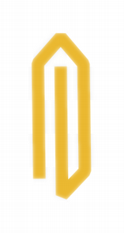
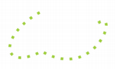
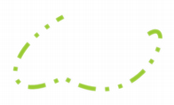

Qt Namespace
The Qt namespace contains miscellaneous identifiers used throughout the Qt library. More...
| Header: | #include <Qt> |
| CMake: | find_package(Qt6 REQUIRED COMPONENTS Core) target_link_libraries(mytarget PRIVATE Qt6::Core) |
| qmake: | QT += core |
Namespaces
| namespace | Literals |
Classes
(since 6.7) class | partial_ordering |
(since 6.7) class | strong_ordering |
(since 6.7) class | weak_ordering |
Types
| flags | Alignment |
| enum | AlignmentFlag { AlignLeft, AlignRight, AlignHCenter, AlignJustify, AlignTop, …, AlignVertical_Mask } |
| enum | AnchorPoint { AnchorLeft, AnchorHorizontalCenter, AnchorRight, AnchorTop, AnchorVerticalCenter, AnchorBottom } |
| enum | ApplicationAttribute { AA_QtQuickUseDefaultSizePolicy, AA_DontShowIconsInMenus, AA_DontShowShortcutsInContextMenus, AA_NativeWindows, AA_DontCreateNativeWidgetSiblings, …, AA_DisableNativeVirtualKeyboard } |
| enum | ApplicationState { ApplicationSuspended, ApplicationHidden, ApplicationInactive, ApplicationActive } |
| flags | ApplicationStates |
| enum | ArrowType { NoArrow, UpArrow, DownArrow, LeftArrow, RightArrow } |
| enum | AspectRatioMode { IgnoreAspectRatio, KeepAspectRatio, KeepAspectRatioByExpanding } |
| enum | Axis { XAxis, YAxis, ZAxis } |
| enum | BGMode { TransparentMode, OpaqueMode } |
| enum | BrushStyle { NoBrush, SolidPattern, Dense1Pattern, Dense2Pattern, Dense3Pattern, …, TexturePattern } |
| enum | CaseSensitivity { CaseInsensitive, CaseSensitive } |
| enum | CheckState { Unchecked, PartiallyChecked, Checked } |
| enum | ChecksumType { ChecksumIso3309, ChecksumItuV41 } |
| enum | ClipOperation { NoClip, ReplaceClip, IntersectClip } |
| enum class | ColorScheme { Unknown, Light, Dark } |
| enum | ConnectionType { AutoConnection, DirectConnection, QueuedConnection, BlockingQueuedConnection, UniqueConnection, SingleShotConnection } |
| enum | ContextMenuPolicy { NoContextMenu, PreventContextMenu, DefaultContextMenu, ActionsContextMenu, CustomContextMenu } |
| enum | CoordinateSystem { DeviceCoordinates, LogicalCoordinates } |
| enum | Corner { TopLeftCorner, TopRightCorner, BottomLeftCorner, BottomRightCorner } |
| enum | CursorMoveStyle { LogicalMoveStyle, VisualMoveStyle } |
| enum | CursorShape { ArrowCursor, UpArrowCursor, CrossCursor, WaitCursor, IBeamCursor, …, BitmapCursor } |
| enum | DateFormat { TextDate, ISODateWithMs, ISODate, RFC2822Date } |
| enum | DayOfWeek { Monday, Tuesday, Wednesday, Thursday, Friday, …, Sunday } |
| enum | DockWidgetArea { LeftDockWidgetArea, RightDockWidgetArea, TopDockWidgetArea, BottomDockWidgetArea, AllDockWidgetAreas, NoDockWidgetArea } |
| flags | DockWidgetAreas |
| enum | DropAction { CopyAction, MoveAction, LinkAction, ActionMask, IgnoreAction, TargetMoveAction } |
| flags | DropActions |
| enum | Edge { TopEdge, LeftEdge, RightEdge, BottomEdge } |
| flags | Edges |
| enum | EnterKeyType { EnterKeyDefault, EnterKeyReturn, EnterKeyDone, EnterKeyGo, EnterKeySend, …, EnterKeyPrevious } |
| enum | EventPriority { HighEventPriority, NormalEventPriority, LowEventPriority } |
| enum | FillRule { OddEvenFill, WindingFill } |
| enum | FindChildOption { FindDirectChildrenOnly, FindChildrenRecursively } |
| flags | FindChildOptions |
| enum | FocusPolicy { TabFocus, ClickFocus, StrongFocus, WheelFocus, NoFocus } |
| enum | FocusReason { MouseFocusReason, TabFocusReason, BacktabFocusReason, ActiveWindowFocusReason, PopupFocusReason, …, OtherFocusReason } |
| enum | GestureFlag { DontStartGestureOnChildren, ReceivePartialGestures, IgnoredGesturesPropagateToParent } |
| flags | GestureFlags |
| enum | GestureState { NoGesture, GestureStarted, GestureUpdated, GestureFinished, GestureCanceled } |
| enum | GestureType { TapGesture, TapAndHoldGesture, PanGesture, PinchGesture, SwipeGesture, CustomGesture } |
| enum | GlobalColor { white, black, red, darkRed, green, …, color1 } |
| HANDLE | |
| enum class | HighDpiScaleFactorRoundingPolicy { Round, Ceil, Floor, RoundPreferFloor, PassThrough } |
| enum | HitTestAccuracy { ExactHit, FuzzyHit } |
| enum | ImageConversionFlag { AutoColor, ColorOnly, MonoOnly, DiffuseDither, OrderedDither, …, NoFormatConversion } |
| flags | ImageConversionFlags |
| enum | InputMethodHint { ImhNone, ImhHiddenText, ImhSensitiveData, ImhNoAutoUppercase, ImhPreferNumbers, …, ImhExclusiveInputMask } |
| flags | InputMethodHints |
| flags | InputMethodQueries |
| enum | InputMethodQuery { ImEnabled, ImCursorRectangle, ImFont, ImCursorPosition, ImSurroundingText, …, ImQueryAll } |
| enum | ItemDataRole { DisplayRole, DecorationRole, EditRole, ToolTipRole, StatusTipRole, …, UserRole } |
| enum | ItemFlag { NoItemFlags, ItemIsSelectable, ItemIsEditable, ItemIsDragEnabled, ItemIsDropEnabled, …, ItemIsUserTristate } |
| flags | ItemFlags |
| enum | ItemSelectionMode { ContainsItemShape, IntersectsItemShape, ContainsItemBoundingRect, IntersectsItemBoundingRect } |
| enum | ItemSelectionOperation { ReplaceSelection, AddToSelection } |
| enum | Key { Key_Escape, Key_Tab, Key_Backtab, Key_Backspace, Key_Return, …, Key_Cancel } |
| enum | KeyboardModifier { NoModifier, ShiftModifier, ControlModifier, AltModifier, MetaModifier, …, GroupSwitchModifier } |
| flags | KeyboardModifiers |
| enum | LayoutDirection { LeftToRight, RightToLeft, LayoutDirectionAuto } |
| enum | MaskMode { MaskInColor, MaskOutColor } |
| enum | MatchFlag { MatchExactly, MatchFixedString, MatchContains, MatchStartsWith, MatchEndsWith, …, MatchRecursive } |
| flags | MatchFlags |
| enum | Modifier { SHIFT, META, CTRL, ALT } |
| flags | Modifiers |
| enum | MouseButton { NoButton, AllButtons, LeftButton, RightButton, MiddleButton, …, ExtraButton24 } |
| flags | MouseButtons |
| enum | MouseEventFlag { MouseEventCreatedDoubleClick } |
| flags | MouseEventFlags |
| enum | MouseEventSource { MouseEventNotSynthesized, MouseEventSynthesizedBySystem, MouseEventSynthesizedByQt, MouseEventSynthesizedByApplication } |
| enum | NativeGestureType { BeginNativeGesture, EndNativeGesture, PanNativeGesture, ZoomNativeGesture, SmartZoomNativeGesture, …, SwipeNativeGesture } |
| enum | NavigationMode { NavigationModeNone, NavigationModeKeypadTabOrder, NavigationModeKeypadDirectional, NavigationModeCursorAuto, NavigationModeCursorForceVisible } |
| enum | Orientation { Horizontal, Vertical } |
| flags | Orientations |
| enum | PenCapStyle { FlatCap, SquareCap, RoundCap } |
| enum | PenJoinStyle { MiterJoin, BevelJoin, RoundJoin, SvgMiterJoin } |
| enum | PenStyle { NoPen, SolidLine, DashLine, DotLine, DashDotLine, …, CustomDashLine } |
(since 6.5) enum class | PermissionStatus { Undetermined, Granted, Denied } |
| enum | ReturnByValueConstant { } |
| enum | ScreenOrientation { PrimaryOrientation, LandscapeOrientation, PortraitOrientation, InvertedLandscapeOrientation, InvertedPortraitOrientation } |
| flags | ScreenOrientations |
| enum | ScrollBarPolicy { ScrollBarAsNeeded, ScrollBarAlwaysOff, ScrollBarAlwaysOn } |
| enum | ScrollPhase { NoScrollPhase, ScrollBegin, ScrollUpdate, ScrollEnd, ScrollMomentum } |
| enum | ShortcutContext { WidgetShortcut, WidgetWithChildrenShortcut, WindowShortcut, ApplicationShortcut } |
| enum | SizeHint { MinimumSize, PreferredSize, MaximumSize, MinimumDescent } |
| enum | SizeMode { AbsoluteSize, RelativeSize } |
| enum | SortOrder { AscendingOrder, DescendingOrder } |
| flags | SplitBehavior |
| enum | SplitBehaviorFlags { KeepEmptyParts, SkipEmptyParts } |
| enum | TabFocusBehavior { NoTabFocus, TabFocusTextControls, TabFocusListControls, TabFocusAllControls } |
| enum | TextElideMode { ElideLeft, ElideRight, ElideMiddle, ElideNone } |
| enum | TextFlag { TextSingleLine, TextDontClip, TextExpandTabs, TextShowMnemonic, TextWordWrap, …, TextJustificationForced } |
| enum | TextFormat { PlainText, RichText, AutoText, MarkdownText } |
| enum | TextInteractionFlag { NoTextInteraction, TextSelectableByMouse, TextSelectableByKeyboard, LinksAccessibleByMouse, LinksAccessibleByKeyboard, …, TextBrowserInteraction } |
| flags | TextInteractionFlags |
| enum | TileRule { StretchTile, RepeatTile, RoundTile } |
| enum | TimeSpec { LocalTime, UTC, OffsetFromUTC, TimeZone } |
| enum | TimerType { PreciseTimer, CoarseTimer, VeryCoarseTimer } |
| enum | ToolBarArea { LeftToolBarArea, RightToolBarArea, TopToolBarArea, BottomToolBarArea, AllToolBarAreas, NoToolBarArea } |
| flags | ToolBarAreas |
| enum | ToolButtonStyle { ToolButtonIconOnly, ToolButtonTextOnly, ToolButtonTextBesideIcon, ToolButtonTextUnderIcon, ToolButtonFollowStyle } |
| enum | TouchPointState { TouchPointUnknownState, TouchPointPressed, TouchPointMoved, TouchPointStationary, TouchPointReleased } |
| flags | TouchPointStates |
| enum | TransformationMode { FastTransformation, SmoothTransformation } |
| enum | UIEffect { UI_AnimateMenu, UI_FadeMenu, UI_AnimateCombo, UI_AnimateTooltip, UI_FadeTooltip, UI_AnimateToolBox } |
| enum | WhiteSpaceMode { WhiteSpaceNormal, WhiteSpacePre, WhiteSpaceNoWrap } |
| enum | WidgetAttribute { WA_AcceptDrops, WA_AlwaysShowToolTips, WA_CustomWhatsThis, WA_DeleteOnClose, WA_Disabled, …, WA_ContentsMarginsRespectsSafeArea } |
| flags | WindowFlags |
| enum | WindowFrameSection { NoSection, LeftSection, TopLeftSection, TopSection, TopRightSection, …, TitleBarArea } |
| enum | WindowModality { NonModal, WindowModal, ApplicationModal } |
| enum | WindowState { WindowNoState, WindowMinimized, WindowMaximized, WindowFullScreen, WindowActive } |
| flags | WindowStates |
| enum | WindowType { Widget, Window, Dialog, Sheet, Drawer, …, WindowType_Mask } |
Functions
(since 6.2) void | beginPropertyUpdateGroup() |
| QTextStream & | bin(QTextStream &stream) |
| QTextStream & | bom(QTextStream &stream) |
| QTextStream & | center(QTextStream &stream) |
(since 6.7) Qt::strong_ordering | compareThreeWay(LeftInt lhs, RightInt rhs) |
(since 6.7) Qt::partial_ordering | compareThreeWay(LeftFloat lhs, RightFloat rhs) |
(since 6.7) Qt::partial_ordering | compareThreeWay(IntType lhs, FloatType rhs) |
(since 6.7) Qt::partial_ordering | compareThreeWay(FloatType lhs, IntType rhs) |
(since 6.7) Qt::strong_ordering | compareThreeWay(const LeftType *lhs, const RightType *rhs) |
(since 6.7) Qt::strong_ordering | compareThreeWay(Enum lhs, Enum rhs) |
| QString | convertFromPlainText(const QString &plain, Qt::WhiteSpaceMode mode) |
| QTextStream & | dec(QTextStream &stream) |
(since 6.2) void | endPropertyUpdateGroup() |
| QTextStream & | endl(QTextStream &stream) |
| QTextStream & | fixed(QTextStream &stream) |
| QTextStream & | flush(QTextStream &stream) |
| QTextStream & | forcepoint(QTextStream &stream) |
| QTextStream & | forcesign(QTextStream &stream) |
| QTextStream & | hex(QTextStream &stream) |
| QTextStream & | left(QTextStream &stream) |
| QTextStream & | lowercasebase(QTextStream &stream) |
| QTextStream & | lowercasedigits(QTextStream &stream) |
| bool | mightBeRichText(QAnyStringView text) |
| QTextStream & | noforcepoint(QTextStream &stream) |
| QTextStream & | noforcesign(QTextStream &stream) |
| QTextStream & | noshowbase(QTextStream &stream) |
| QTextStream & | oct(QTextStream &stream) |
| QTextStream & | reset(QTextStream &stream) |
| QTextStream & | right(QTextStream &stream) |
| QTextStream & | scientific(QTextStream &stream) |
| QTextStream & | showbase(QTextStream &stream) |
| QTextStream & | uppercasebase(QTextStream &stream) |
| QTextStream & | uppercasedigits(QTextStream &stream) |
| QTextStream & | ws(QTextStream &stream) |
Detailed Description
Namespaces
namespace Qt::Literals
Classes
class partial_ordering
Qt::partial_ordering represents the result of a comparison that allows for unordered results. More...
class strong_ordering
Qt::strong_ordering represents a comparison where equivalent values are indistinguishable. More...
class weak_ordering
Qt::weak_ordering represents a comparison where equivalent values are still distinguishable. More...
Type Documentation
enum Qt::AlignmentFlag
flags Qt::Alignment
This enum type is used to describe alignment. It contains horizontal and vertical flags that can be combined to produce the required effect.
The TextElideMode enum can also be used in many situations to fine-tune the appearance of aligned text.
The horizontal flags are:
| Constant | Value | Description |
|---|---|---|
Qt::AlignLeft | 0x0001 | Aligns with the left edge. |
Qt::AlignRight | 0x0002 | Aligns with the right edge. |
Qt::AlignHCenter | 0x0004 | Centers horizontally in the available space. |
Qt::AlignJustify | 0x0008 | Justifies the text in the available space. |
The vertical flags are:
| Constant | Value | Description |
|---|---|---|
Qt::AlignTop | 0x0020 | Aligns with the top. |
Qt::AlignBottom | 0x0040 | Aligns with the bottom. |
Qt::AlignVCenter | 0x0080 | Centers vertically in the available space. |
Qt::AlignBaseline | 0x0100 | Aligns with the baseline. |
You can use only one of the horizontal flags at a time. There is one two-dimensional flag:
| Constant | Value | Description |
|---|---|---|
Qt::AlignCenter | AlignVCenter | AlignHCenter | Centers in both dimensions. |
You can use at most one horizontal and one vertical flag at a time. Qt::AlignCenter counts as both horizontal and vertical.
Three enum values are useful in applications that can be run in right-to-left mode:
| Constant | Value | Description |
|---|---|---|
Qt::AlignAbsolute | 0x0010 | If the widget's layout direction is Qt::RightToLeft (instead of Qt::LeftToRight, the default), Qt::AlignLeft refers to the right edge and Qt::AlignRight to the left edge. This is normally the desired behavior. If you want Qt::AlignLeft to always mean "left" and Qt::AlignRight to always mean "right", combine the flag with Qt::AlignAbsolute. |
Qt::AlignLeading | AlignLeft | Synonym for Qt::AlignLeft. |
Qt::AlignTrailing | AlignRight | Synonym for Qt::AlignRight. |
Masks:
| Constant | Value |
|---|---|
Qt::AlignHorizontal_Mask | AlignLeft | AlignRight | AlignHCenter | AlignJustify | AlignAbsolute |
Qt::AlignVertical_Mask | AlignTop | AlignBottom | AlignVCenter | AlignBaseline |
Conflicting combinations of flags have undefined meanings.
The Alignment type is a typedef for QFlags<AlignmentFlag>. It stores an OR combination of AlignmentFlag values.
enum Qt::AnchorPoint
Specifies a side of a layout item that can be anchored. This is used by QGraphicsAnchorLayout.
| Constant | Value | Description |
|---|---|---|
Qt::AnchorLeft | 0 | The left side of a layout item. |
Qt::AnchorHorizontalCenter | 1 | A "virtual" side that is centered between the left and the right side of a layout item. |
Qt::AnchorRight | 2 | The right side of a layout item. |
Qt::AnchorTop | 3 | The top side of a layout item. |
Qt::AnchorVerticalCenter | 4 | A "virtual" side that is centered between the top and the bottom side of a layout item. |
Qt::AnchorBottom | 5 | The bottom side of a layout item. |
See also QGraphicsAnchorLayout.
enum Qt::ApplicationAttribute
This enum describes attributes that change the behavior of application-wide features. These are enabled and disabled using QCoreApplication::setAttribute(), and can be tested for with QCoreApplication::testAttribute().
| Constant | Value | Description |
|---|---|---|
Qt::AA_QtQuickUseDefaultSizePolicy (since Qt 6.7) | 1 | Qt Quick Layouts use the built-in size policy of Item. For example, when this is set, Button fills the available width, but has a fixed height. When this is not set, it will use the default sizing behavior of the layout it's in, which is to use its implicit size as the preferred size. This is explained in detail in Specifying preferred size and Size constraints. When this is set, the default size policy of the item with the layout can be overridden by explicitly setting Layout.fillWidth or Layout.fillHeight. Note: This API is considered tech preview and may change or be removed in future versions of Qt. |
Qt::AA_DontShowIconsInMenus | 2 | Actions with the Icon property won't be shown in any menus unless specifically set by the QAction::iconVisibleInMenu property. Menus that are currently open or menus already created in the native macOS menubar may not pick up a change in this attribute. Changes in the QAction::iconVisibleInMenu property will always be picked up. |
Qt::AA_DontShowShortcutsInContextMenus | 28 | Actions with the Shortcut property won't be shown in any shortcut menus unless specifically set by the QAction::shortcutVisibleInContextMenu property. This value was added in Qt 5.10, and is by default based on the value reported by QStyleHints::showShortcutsInContextMenus(). To override the default behavior, set the style hint before QCoreApplication has been instantiated, or set this attribute after QCoreApplication has been instantiated. |
Qt::AA_NativeWindows | 3 | Ensures that widgets have native windows. |
Qt::AA_DontCreateNativeWidgetSiblings | 4 | Ensures that siblings of native widgets stay non-native unless specifically set by the Qt::WA_NativeWindow attribute. |
Qt::AA_PluginApplication | 5 | Indicates that Qt is used to author a plugin. Depending on the operating system, it suppresses specific initializations that do not necessarily make sense in the plugin case. For example on macOS, this includes avoiding loading our nib for the main menu and not taking possession of the native menu bar. Setting this attribute to true will also set the AA_DontUseNativeMenuBar attribute to true. It also disables native event filters. This attribute must be set before QGuiApplication constructed. This value was added in Qt 5.7. |
Qt::AA_DontUseNativeMenuBar | 6 | All menubars created while this attribute is set to true won't be used as a native menubar (e.g, the menubar at the top of the main screen on macOS). |
Qt::AA_MacDontSwapCtrlAndMeta | 7 | Keyboard shortcuts on Apple platforms are typically based on the Command (or Cmd) keyboard modifier, represented by the ⌘ symbol. For example, the 'Copy' action is Command+C (⌘+C). To ease cross platform development Qt will by default remap Command to the Qt::ControlModifier, to align with other platforms. This allows creating keyboard shortcuts such as "Ctrl+J", which on macOS will then map to Command+J, as expected by macOS users. The actual Control (or Ctrl) modifier on Apple platforms, represented by ⌃, is mapped to Qt::MetaModifier. |
When this attribute is true Qt will not do the remapping, and pressing the Command modifier will result in Qt::MetaModifier, while pressing the Control modifier will result in Qt::ControlModifier.
Note that the QKeySequence::StandardKey sequences will always be based on the same modifier (i.e., QKeySequence::Copy will be Command+C regardless of the value set), but what is output for QKeySequence::toString() will be different.
| Constant | Value | Description |
|---|---|---|
Qt::AA_Use96Dpi | 8 | Assume the screen has a resolution of 96 DPI rather than using the OS-provided resolution. This will cause font rendering to be consistent in pixels-per-point across devices rather than defining 1 point as 1/72 inch. |
Qt::AA_SynthesizeTouchForUnhandledMouseEvents | 11 | All mouse events that are not accepted by the application will be translated to touch events instead. |
Qt::AA_SynthesizeMouseForUnhandledTouchEvents | 12 | All touch events that are not accepted by the application will be translated to left button mouse events instead. This attribute is enabled by default. |
Qt::AA_ForceRasterWidgets | 14 | Make top-level widgets use pure raster surfaces, and do not support non-native GL-based child widgets. |
Qt::AA_UseDesktopOpenGL | 15 | Forces the usage of desktop OpenGL (for example, opengl32.dll or libGL.so) on platforms that use dynamic loading of the OpenGL implementation. This attribute must be set before QGuiApplication is constructed. This value was added in Qt 5.3. |
Qt::AA_UseOpenGLES | 16 | Forces the usage of OpenGL ES 2.0 or higher on platforms that use dynamic loading of the OpenGL implementation. This attribute must be set before QGuiApplication is constructed. This value was added in Qt 5.3. |
Qt::AA_UseSoftwareOpenGL | 17 | Forces the usage of a software based OpenGL implementation on platforms that use dynamic loading of the OpenGL implementation. This will typically be a patched build of Mesa llvmpipe, providing OpenGL 2.1. The value may have no effect if no such OpenGL implementation is available. The default name of this library is opengl32sw.dll and can be overridden by setting the environment variable QT_OPENGL_DLL. See the platform-specific pages, for instance Qt for Windows, for more information. This attribute must be set before QGuiApplication is constructed. This value was added in Qt 5.4. |
Qt::AA_ShareOpenGLContexts | 18 | Enables resource sharing between the OpenGL contexts used by classes like QOpenGLWidget and QQuickWidget. This allows sharing OpenGL resources, like textures, between QOpenGLWidget instances that belong to different top-level windows. This attribute must be set before QGuiApplication is constructed. This value was added in Qt 5.4. |
Qt::AA_SetPalette | 19 | Indicates whether a palette was explicitly set on the QGuiApplication. This value was added in Qt 5.5. |
Qt::AA_UseStyleSheetPropagationInWidgetStyles | 22 | By default, Qt Style Sheets disable regular QWidget palette and font propagation. When this flag is enabled, font and palette changes propagate as though the user had manually called the corresponding QWidget methods. See The Style Sheet Syntax - Inheritance for more details. This value was added in Qt 5.7. |
Qt::AA_DontUseNativeDialogs | 23 | All dialogs created while this attribute is set to true won't use the native dialogs provided by the platform. This value was added in Qt 5.7. |
Qt::AA_SynthesizeMouseForUnhandledTabletEvents | 24 | All tablet events that are not accepted by the application will be translated to mouse events instead. This attribute is enabled by default. This value was added in Qt 5.7. |
Qt::AA_CompressHighFrequencyEvents | 25 | Enables compression of certain frequent events. On the X11 windowing system, the default value is true, which means that QEvent::MouseMove, QEvent::TouchUpdate, and changes in window size and position will be combined whenever they occur more frequently than the application handles them, so that they don't accumulate and overwhelm the application later. On Windows 8 and above the default value is also true, but it only applies to touch events. Mouse and window events remain unaffected by this flag. On other platforms, the default is false. (In the future, the compression feature may be implemented across platforms.) You can test the attribute to see whether compression is enabled. If your application needs to handle all events with no compression, you can unset this attribute. Notice that input events from tablet devices will not be compressed. See AA_CompressTabletEvents if you want these to be compressed as well. This value was added in Qt 5.7. |
Qt::AA_CompressTabletEvents | 29 | Enables compression of input events from tablet devices. Notice that AA_CompressHighFrequencyEvents must be true for events compression to be enabled, and that this flag extends the former to tablet events. Currently supported on the X11 windowing system, Windows 8 and above. The default value is false. This value was added in Qt 5.10. |
Qt::AA_DontCheckOpenGLContextThreadAffinity | 26 | When making a context current using QOpenGLContext, do not check that the QObject thread affinity of the QOpenGLContext object is the same thread calling makeCurrent(). This value was added in Qt 5.8. |
Qt::AA_DisableShaderDiskCache | 27 | Disables caching of shader program binaries on disk. By default Qt Quick, QPainter's OpenGL backend, and any application using QOpenGLShaderProgram with one of its addCacheableShaderFromSource overloads will employ a disk-based program binary cache in either the shared or per-process cache storage location, on systems that support glProgramBinary(). In the unlikely event of this being problematic, set this attribute to disable all disk-based caching of shaders. |
Qt::AA_DisableSessionManager | 31 | Disables the QSessionManager. By default Qt will connect to a running session manager for a GUI application on supported platforms, use of a session manager may be redundant for system services. This attribute must be set before QGuiApplication is constructed. This value was added in 5.14 |
Qt::AA_DisableNativeVirtualKeyboard | 9 | When this attribute is set, the native on-screen virtual keyboard will not be shown automatically when a text input widget gains focus on a system without a physical keyboard. Currently supported on the Windows platform only. This value was added in 5.15 |
enum Qt::ApplicationState
flags Qt::ApplicationStates
This enum type is used to specify the current state of the application.
The states are
| Constant | Value | Description |
|---|---|---|
Qt::ApplicationSuspended | 0x00000000 | The application is about to suspend. When entering this state, the application should save its state, cease all activities, and be prepared for code execution to stop. While suspended, the application can be killed at any time without further warnings (e.g. when low memory forces the OS to purge suspended applications). |
Qt::ApplicationHidden | 0x00000001 | The application is hidden and runs in the background. This is the normal state for applications that need to do background processing, like playing music, while the user interacts with other applications. The application should free up all graphical resources when entering this state. |
Qt::ApplicationInactive | 0x00000002 | The application is visible, but not selected to be in front. On desktop platforms, this typically means that the user activated another application. On mobile platforms, it is more common to enter this state when the OS is interrupting the user with e.g. incoming calls or SMS-messages. While in this state, consider reducing CPU-intensive tasks. |
Qt::ApplicationActive | 0x00000004 | The application is visible and selected to be in front. |
The ApplicationStates type is a typedef for QFlags<ApplicationState>. It stores an OR combination of ApplicationState values.
enum Qt::ArrowType
| Constant | Value |
|---|---|
Qt::NoArrow | 0 |
Qt::UpArrow | 1 |
Qt::DownArrow | 2 |
Qt::LeftArrow | 3 |
Qt::RightArrow | 4 |
enum Qt::AspectRatioMode
This enum type defines what happens to the aspect ratio when scaling an rectangle.

| Constant | Value | Description |
|---|---|---|
Qt::IgnoreAspectRatio | 0 | The size is scaled freely. The aspect ratio is not preserved. |
Qt::KeepAspectRatio | 1 | The size is scaled to a rectangle as large as possible inside a given rectangle, preserving the aspect ratio. |
Qt::KeepAspectRatioByExpanding | 2 | The size is scaled to a rectangle as small as possible outside a given rectangle, preserving the aspect ratio. |
See also QSize::scale() and QImage::scaled().
enum Qt::Axis
This enum type defines three values to represent the three axes in the cartesian coordinate system.
| Constant | Value | Description |
|---|---|---|
Qt::XAxis | 0 | The X axis. |
Qt::YAxis | 1 | The Y axis. |
Qt::ZAxis | 2 | The Z axis. |
See also QTransform::rotate() and QTransform::rotateRadians().
enum Qt::BGMode
Background mode:
| Constant | Value |
|---|---|
Qt::TransparentMode | 0 |
Qt::OpaqueMode | 1 |
enum Qt::BrushStyle
This enum type defines the brush styles supported by Qt, i.e. the fill pattern of shapes drawn using QPainter.

| Constant | Value | Description |
|---|---|---|
Qt::NoBrush | 0 | No brush pattern. |
Qt::SolidPattern | 1 | Uniform color. |
Qt::Dense1Pattern | 2 | Extremely dense brush pattern. |
Qt::Dense2Pattern | 3 | Very dense brush pattern. |
Qt::Dense3Pattern | 4 | Somewhat dense brush pattern. |
Qt::Dense4Pattern | 5 | Half dense brush pattern. |
Qt::Dense5Pattern | 6 | Somewhat sparse brush pattern. |
Qt::Dense6Pattern | 7 | Very sparse brush pattern. |
Qt::Dense7Pattern | 8 | Extremely sparse brush pattern. |
Qt::HorPattern | 9 | Horizontal lines. |
Qt::VerPattern | 10 | Vertical lines. |
Qt::CrossPattern | 11 | Crossing horizontal and vertical lines. |
Qt::BDiagPattern | 12 | Backward diagonal lines. |
Qt::FDiagPattern | 13 | Forward diagonal lines. |
Qt::DiagCrossPattern | 14 | Crossing diagonal lines. |
Qt::LinearGradientPattern | 15 | Linear gradient (set using a dedicated QBrush constructor). |
Qt::ConicalGradientPattern | 17 | Conical gradient (set using a dedicated QBrush constructor). |
Qt::RadialGradientPattern | 16 | Radial gradient (set using a dedicated QBrush constructor). |
Qt::TexturePattern | 24 | Custom pattern (see QBrush::setTexture()). |
See also QBrush.
enum Qt::CaseSensitivity
| Constant | Value |
|---|---|
Qt::CaseInsensitive | 0 |
Qt::CaseSensitive | 1 |
enum Qt::CheckState
This enum describes the state of checkable items, controls, and widgets.
| Constant | Value | Description |
|---|---|---|
Qt::Unchecked | 0 | The item is unchecked. |
Qt::PartiallyChecked | 1 | The item is partially checked. Items in hierarchical models may be partially checked if some, but not all, of their children are checked. |
Qt::Checked | 2 | The item is checked. |
See also QCheckBox, Qt::ItemFlags, and Qt::ItemDataRole.
enum Qt::ChecksumType
This enum describes the possible standards used by qChecksum().
| Constant | Value | Description |
|---|---|---|
Qt::ChecksumIso3309 | 0 | Checksum calculation based on ISO 3309. |
Qt::ChecksumItuV41 | 1 | Checksum calculation based on ITU-V.41. |
enum Qt::ClipOperation
| Constant | Value | Description |
|---|---|---|
Qt::NoClip | 0 | This operation turns clipping off. |
Qt::ReplaceClip | 1 | Replaces the current clip path/rect/region with the one supplied in the function call. |
Qt::IntersectClip | 2 | Intersects the current clip path/rect/region with the one supplied in the function call. |
enum class Qt::ColorScheme
Represents the appearance of an application's theme, defined by QGuiApplication::palette().
| Constant | Value | Description |
|---|---|---|
Qt::ColorScheme::Unknown | 0 | The appearance is unknown. |
Qt::ColorScheme::Light | 1 | The background colors are lighter than the text color, i.e. the theme is light. |
Qt::ColorScheme::Dark | 2 | The background colors are darker than the text color, i.e. the theme is dark. |
enum Qt::ConnectionType
This enum describes the types of connection that can be used between signals and slots. In particular, it determines whether a particular signal is delivered to a slot immediately or queued for delivery at a later time.
| Constant | Value | Description |
|---|---|---|
Qt::AutoConnection | 0 | (Default) If the receiver lives in the thread that emits the signal, Qt::DirectConnection is used. Otherwise, Qt::QueuedConnection is used. The connection type is determined when the signal is emitted. |
Qt::DirectConnection | 1 | The slot is invoked immediately when the signal is emitted. The slot is executed in the signalling thread. |
Qt::QueuedConnection | 2 | The slot is invoked when control returns to the event loop of the receiver's thread. The slot is executed in the receiver's thread. |
Qt::BlockingQueuedConnection | 3 | Same as Qt::QueuedConnection, except that the signalling thread blocks until the slot returns. This connection must not be used if the receiver lives in the signalling thread, or else the application will deadlock. |
Qt::UniqueConnection | 0x80 | This is a flag that can be combined with any one of the above connection types, using a bitwise OR. When Qt::UniqueConnection is set, QObject::connect() will fail if the connection already exists (i.e. if the same signal is already connected to the same slot for the same pair of objects). |
Qt::SingleShotConnection | 0x100 | This is a flag that can be combined with any one of the above connection types, using a bitwise OR. When Qt::SingleShotConnection is set, the slot is going to be called only once; the connection will be automatically broken when the signal is emitted. This flag was introduced in Qt 6.0. |
With queued connections, the parameters must be of types that are known to Qt's meta-object system, because Qt needs to copy the arguments to store them in an event behind the scenes. If you try to use a queued connection and get the error message:
QObject::connect: Cannot queue arguments of type 'MyType'
Call qRegisterMetaType() to register the data type before you establish the connection.
When using signals and slots with multiple threads, see Signals and Slots Across Threads.
See also Thread Support in Qt, QObject::connect(), qRegisterMetaType(), and Q_DECLARE_METATYPE().
enum Qt::ContextMenuPolicy
This enum type defines the various policies a widget can have with respect to showing a context menu.
| Constant | Value | Description |
|---|---|---|
Qt::NoContextMenu | 0 | the widget does not feature a context menu, context menu handling is deferred to the widget's parent. |
Qt::PreventContextMenu | 4 | the widget does not feature a context menu, and in contrast to NoContextMenu, the handling is not deferred to the widget's parent. This means that all right mouse button events are guaranteed to be delivered to the widget itself through QWidget::mousePressEvent(), and QWidget::mouseReleaseEvent(). |
Qt::DefaultContextMenu | 1 | the widget's QWidget::contextMenuEvent() handler is called. |
Qt::ActionsContextMenu | 2 | the widget displays its QWidget::actions() as context menu. |
Qt::CustomContextMenu | 3 | the widget emits the QWidget::customContextMenuRequested() signal. |
enum Qt::CoordinateSystem
This enum specifies the coordinate system.
| Constant | Value | Description |
|---|---|---|
Qt::DeviceCoordinates | 0 | Coordinates are relative to the top-left corner of the object's paint device. |
Qt::LogicalCoordinates | 1 | Coordinates are relative to the top-left corner of the object. |
enum Qt::Corner
This enum type specifies a corner in a rectangle:
| Constant | Value | Description |
|---|---|---|
Qt::TopLeftCorner | 0x00000 | The top-left corner of the rectangle. |
Qt::TopRightCorner | 0x00001 | The top-right corner of the rectangle. |
Qt::BottomLeftCorner | 0x00002 | The bottom-left corner of the rectangle. |
Qt::BottomRightCorner | 0x00003 | The bottom-right corner of the rectangle. |
enum Qt::CursorMoveStyle
This enum describes the movement style available to text cursors. The options are:
| Constant | Value | Description |
|---|---|---|
Qt::LogicalMoveStyle | 0 | Within a left-to-right text block, decrease cursor position when pressing left arrow key, increase cursor position when pressing the right arrow key. If the text block is right-to-left, the opposite behavior applies. |
Qt::VisualMoveStyle | 1 | Pressing the left arrow key will always cause the cursor to move left, regardless of the text's writing direction. Pressing the right arrow key will always cause the cursor to move right. |
enum Qt::CursorShape
This enum type defines the various cursors that can be used.
The standard arrow cursor is the default for widgets in a normal state.
| Constant | Value | Description |
|---|---|---|
Qt::ArrowCursor | 0 | |
Qt::UpArrowCursor | 1 |  An arrow pointing upwards toward the top of the screen. An arrow pointing upwards toward the top of the screen. |
Qt::CrossCursor | 2 |  A crosshair cursor, typically used to help the user accurately select a point on the screen. A crosshair cursor, typically used to help the user accurately select a point on the screen. |
Qt::WaitCursor | 3 |  An hourglass or watch cursor, usually shown during operations that prevent the user from interacting with the application. An hourglass or watch cursor, usually shown during operations that prevent the user from interacting with the application. |
Qt::IBeamCursor | 4 |  A caret or ibeam cursor, indicating that a widget can accept and display text input. A caret or ibeam cursor, indicating that a widget can accept and display text input. |
Qt::SizeVerCursor | 5 |  A cursor used for elements that are used to vertically resize top-level windows. A cursor used for elements that are used to vertically resize top-level windows. |
Qt::SizeHorCursor | 6 |  A cursor used for elements that are used to horizontally resize top-level windows. A cursor used for elements that are used to horizontally resize top-level windows. |
Qt::SizeBDiagCursor | 7 |  A cursor used for elements that are used to diagonally resize top-level windows at their top-right and bottom-left corners. A cursor used for elements that are used to diagonally resize top-level windows at their top-right and bottom-left corners. |
Qt::SizeFDiagCursor | 8 |  A cursor used for elements that are used to diagonally resize top-level windows at their top-left and bottom-right corners. A cursor used for elements that are used to diagonally resize top-level windows at their top-left and bottom-right corners. |
Qt::SizeAllCursor | 9 |  A cursor used for elements that are used to resize top-level windows in any direction. A cursor used for elements that are used to resize top-level windows in any direction. |
Qt::BlankCursor | 10 | A blank/invisible cursor, typically used when the cursor shape needs to be hidden. |
Qt::SplitVCursor | 11 |  A cursor used for vertical splitters, indicating that a handle can be dragged horizontally to adjust the use of available space. A cursor used for vertical splitters, indicating that a handle can be dragged horizontally to adjust the use of available space. |
Qt::SplitHCursor | 12 |  A cursor used for horizontal splitters, indicating that a handle can be dragged vertically to adjust the use of available space. A cursor used for horizontal splitters, indicating that a handle can be dragged vertically to adjust the use of available space. |
Qt::PointingHandCursor | 13 |  A pointing hand cursor that is typically used for clickable elements such as hyperlinks. A pointing hand cursor that is typically used for clickable elements such as hyperlinks. |
Qt::ForbiddenCursor | 14 |  A slashed circle cursor, typically used during drag and drop operations to indicate that dragged content cannot be dropped on particular widgets or inside certain regions. A slashed circle cursor, typically used during drag and drop operations to indicate that dragged content cannot be dropped on particular widgets or inside certain regions. |
Qt::OpenHandCursor | 17 |  A cursor representing an open hand, typically used to indicate that the area under the cursor is the visible part of a canvas that the user can click and drag in order to scroll around. A cursor representing an open hand, typically used to indicate that the area under the cursor is the visible part of a canvas that the user can click and drag in order to scroll around. |
Qt::ClosedHandCursor | 18 | A cursor representing a closed hand, typically used to indicate that a dragging operation is in progress that involves scrolling. |
Qt::WhatsThisCursor | 15 |  An arrow with a question mark, typically used to indicate the presence of What's This? help for a widget. An arrow with a question mark, typically used to indicate the presence of What's This? help for a widget. |
Qt::BusyCursor | 16 |  An hourglass or watch cursor, usually shown during operations that allow the user to interact with the application while they are performed in the background. An hourglass or watch cursor, usually shown during operations that allow the user to interact with the application while they are performed in the background. |
Qt::DragMoveCursor | 20 | A cursor that is usually used when dragging an item. |
Qt::DragCopyCursor | 19 | A cursor that is usually used when dragging an item to copy it. |
Qt::DragLinkCursor | 21 | A cursor that is usually used when dragging an item to make a link to it. |
Qt::BitmapCursor | 24 |
enum Qt::DateFormat
| Constant | Value | Description |
|---|---|---|
Qt::TextDate | 0 | The default Qt format, which includes the day and month name, the day number in the month, and the year in full. The day and month names will be short names in English (C locale). This effectively uses, for a date, format ddd MMM d yyyy, for a time HH:mm:ss and combines these as ddd MMM d HH:mm:ss yyyy for a date-time, with an optional zone-offset suffix, where relevant. When reading from a string, a fractional part is also recognized on the seconds of a time part, as HH:mm:ss.zzz, and some minor variants on the format may be recognized, for compatibility with earlier versions of Qt and with changes to the format planned for the future. In particular, the zone-offset suffix presently uses GMT[±tzoff] with a tzoff in HH[[:]mm] format (two-digit hour and optional two-digit minutes, with optional colon separator); this shall change to use UTC in place of GMT in a future release of Qt, so the planned UTC format is recognized. |
Qt::ISODateWithMs | 9 | ISO 8601 extended format: uses yyyy-MM-dd for dates, HH:mm:ss.zzz for times or yyyy-MM-ddTHH:mm:ss.zzz (e.g. 2017-07-24T15:46:29.739) for combined dates and times, optionally with a time-zone suffix (Z for UTC otherwise an offset as ±HH:mm) where appropriate. When parsed, a single space, ' ', may be used in place of the 'T' separator between date and time; no other spacing characters are permitted. This format also accepts HH:mm and plain HH formats for the time part, either of which may include a fractional part, HH:mm.zzz or HH.zzz, applied to the last field present (hour or minute). |
Qt::ISODate | 1 | ISO 8601 extended format, as for ISODateWithMs, but omitting the milliseconds (.zzz) part when converting to a string. There is no difference when reading from a string: if a fractional part is present on the last time field, either format will accept it. |
Qt::RFC2822Date | 8 | RFC 2822, RFC 850 and RFC 1036 format: when converting dates to string form, format dd MMM yyyy is used, for times the format is HH:mm:ss. For combined date and time, these are combined as dd MMM yyyy HH:mm:ss ±tzoff (omitting the optional leading day of the week from the first format recognized). When reading from a string either [ddd,] dd MMM yyyy [HH:mm[:ss]][ ±tzoff] or ddd MMM dd[ HH:mm:ss] yyyy[ ±tzoff] will be recognized for combined dates and times, where tzoff is a timezone offset in HHmm format. Arbitrary spacing may appear before or after the text and any non-empty spacing may replace the spaces in this format. For dates and times separately, the same formats are matched and the unwanted parts are ignored. In particular, note that a time is not recognized without an accompanying date. |
Note: For ISODate formats, each y, M and d represents a single digit of the year, month, and day used to specify the date. Each H, m, and s represents a single digit of the hour (up to 24), minute and second used to specify the time. An hour of 24, with zero for all other time fields, is understood as the start of the next day. A .zzz stands for a fractional part suffix on the preceding field, which may be separated from that field either by a comma ',' or the dot '.' shown. Precision beyond milliseconds is accepted but discarded, rounding to the nearest representable millisecond. The presence of a literal T character is used to separate the date and time when both are specified. For the TextDate and RFC2822Date formats, ddd stands for the first three letters of the name of the day of the week and MMM stands for the first three letters of the month name. The names of days and months are always in English (C locale) regardless of user preferences or system settings. The other format characters have the same meaning as for the ISODate format, except that 24 is not accepted as an hour. Parts of a format enclosed in square brackets [...] are optional; the square brackets do not form part of the format. The plus-or-minus character '±' here stands for either sign character, '-' for minus or '+' for plus.
Note: Zone offsets are measured positive to the east of Greenwich, negative to the west, as is usual for UTC-based offset notations (conflicting with some GMT-based zones-names, such as Etc/GMT+3, which use the opposite convention).
See also QDate::toString(), QTime::toString(), QDateTime::toString(), QDate::fromString(), QTime::fromString(), and QDateTime::fromString().
enum Qt::DayOfWeek
| Constant | Value |
|---|---|
Qt::Monday | 1 |
Qt::Tuesday | 2 |
Qt::Wednesday | 3 |
Qt::Thursday | 4 |
Qt::Friday | 5 |
Qt::Saturday | 6 |
Qt::Sunday | 7 |
enum Qt::DockWidgetArea
flags Qt::DockWidgetAreas
Represents the areas a QDockWidget can be plugged to.
Note: A floating dock widget with tabs can be docked anywhere.
| Constant | Value | Description |
|---|---|---|
Qt::LeftDockWidgetArea | 0x1 | The left dock area of a QMainWindow. |
Qt::RightDockWidgetArea | 0x2 | The right dock area of a QMainWindow. |
Qt::TopDockWidgetArea | 0x4 | The top dock area of a QMainWindow. |
Qt::BottomDockWidgetArea | 0x8 | The bottom dock area of a QMainWindow. |
Qt::AllDockWidgetAreas | DockWidgetArea_Mask | All dock widget areas (default). |
Qt::NoDockWidgetArea | 0 | No dock widget areas. |
The DockWidgetAreas type is a typedef for QFlags<DockWidgetArea>. It stores an OR combination of DockWidgetArea values.
See also QDockWidget::setAllowedAreas and QDockWidget::isAreaAllowed.
enum Qt::DropAction
flags Qt::DropActions
| Constant | Value | Description |
|---|---|---|
Qt::CopyAction | 0x1 | Copy the data to the target. |
Qt::MoveAction | 0x2 | Move the data from the source to the target. |
Qt::LinkAction | 0x4 | Create a link from the source to the target. |
Qt::ActionMask | 0xff | |
Qt::IgnoreAction | 0x0 | Ignore the action (do nothing with the data). |
Qt::TargetMoveAction | 0x8002 | On Windows, this value is used when the ownership of the D&D data should be taken over by the target application, i.e., the source application should not delete the data. On X11 this value is used to do a move. TargetMoveAction is not used on the Mac. |
The DropActions type is a typedef for QFlags<DropAction>. It stores an OR combination of DropAction values.
enum Qt::Edge
flags Qt::Edges
This enum type specifies an edge in a rectangle:
| Constant | Value | Description |
|---|---|---|
Qt::TopEdge | 0x00001 | The top edge of the rectangle. |
Qt::LeftEdge | 0x00002 | The left edge of the rectangle. |
Qt::RightEdge | 0x00004 | The right edge of the rectangle. |
Qt::BottomEdge | 0x00008 | The bottom edge of the rectangle. |
The Edges type is a typedef for QFlags<Edge>. It stores an OR combination of Edge values.
enum Qt::EnterKeyType
This can be used to alter the appearance of the Return key on an on-screen keyboard.
Note: Not all of these values are supported on all platforms. For unsupported values the default key will be used instead.
| Constant | Value | Description |
|---|---|---|
Qt::EnterKeyDefault | 0 | The default Enter key. This can either be a button closing the keyboard, or a Return button causing a new line in case of a multi-line input field. |
Qt::EnterKeyReturn | 1 | Show a Return button that inserts a new line. The keyboard will not close when this button is pressed. |
Qt::EnterKeyDone | 2 | Show a "Done" button. The keyboard will close when this button is pressed. |
Qt::EnterKeyGo | 3 | Show a "Go" button. Typically used in an address bar when entering a URL; the keyboard will close when this button is pressed. |
Qt::EnterKeySend | 4 | Show a "Send" button. The keyboard will close when this button is pressed. |
Qt::EnterKeySearch | 5 | Show a "Search" button. The keyboard will close when this button is pressed. |
Qt::EnterKeyNext | 6 | Show a "Next" button. Typically used in a form to allow navigating to the next input field; the keyboard will not close when this button is pressed. |
Qt::EnterKeyPrevious | 7 | Show a "Previous" button. The keyboard will not close when this button is pressed. |
enum Qt::EventPriority
This enum can be used to specify event priorities.
| Constant | Value | Description |
|---|---|---|
Qt::HighEventPriority | 1 | Events with this priority are sent before events with NormalEventPriority or LowEventPriority. |
Qt::NormalEventPriority | 0 | Events with this priority are sent after events with HighEventPriority, but before events with LowEventPriority. |
Qt::LowEventPriority | -1 | Events with this priority are sent after events with HighEventPriority or NormalEventPriority. |
Note that these values are provided purely for convenience, since event priorities can be any value between INT_MAX and INT_MIN, inclusive. For example, you can define custom priorities as being relative to each other:
enum CustomEventPriority { // An important event ImportantEventPriority = Qt::HighEventPriority, // A more important event MoreImportantEventPriority = ImportantEventPriority + 1, // A critical event CriticalEventPriority = 100 * MoreImportantEventPriority, // Not that important StatusEventPriority = Qt::LowEventPriority, // These are less important than Status events IdleProcessingDoneEventPriority = StatusEventPriority - 1 };
See also QCoreApplication::postEvent().
enum Qt::FillRule
Specifies which method should be used to fill the paths and polygons.
| Constant | Value | Description |
|---|---|---|
Qt::OddEvenFill | 0 | Specifies that the region is filled using the odd even fill rule. With this rule, we determine whether a point is inside the shape by using the following method. Draw a horizontal line from the point to a location outside the shape, and count the number of intersections. If the number of intersections is an odd number, the point is inside the shape. This mode is the default. |
Qt::WindingFill | 1 | Specifies that the region is filled using the non zero winding rule. With this rule, we determine whether a point is inside the shape by using the following method. Draw a horizontal line from the point to a location outside the shape. Determine whether the direction of the line at each intersection point is up or down. The winding number is determined by summing the direction of each intersection. If the number is non zero, the point is inside the shape. This fill mode can also in most cases be considered as the intersection of closed shapes. |
enum Qt::FindChildOption
flags Qt::FindChildOptions
| Constant | Value | Description |
|---|---|---|
Qt::FindDirectChildrenOnly | 0x0 | Looks only at the direct children of the object. |
Qt::FindChildrenRecursively | 0x1 | Looks at all children of the object (recursive search). |
The FindChildOptions type is a typedef for QFlags<FindChildOption>. It stores an OR combination of FindChildOption values.
enum Qt::FocusPolicy
This enum type defines the various policies a widget can have with respect to acquiring keyboard focus.
| Constant | Value | Description |
|---|---|---|
Qt::TabFocus | 0x1 | the widget accepts focus by tabbing. |
Qt::ClickFocus | 0x2 | the widget accepts focus by clicking. |
Qt::StrongFocus | TabFocus | ClickFocus | 0x8 | the widget accepts focus by both tabbing and clicking. On macOS this will also be indicate that the widget accepts tab focus when in 'Text/List focus mode'. |
Qt::WheelFocus | StrongFocus | 0x4 | like Qt::StrongFocus plus the widget accepts focus by using the mouse wheel. |
Qt::NoFocus | 0 | the widget does not accept focus. |
enum Qt::FocusReason
This enum specifies why the focus changed. It will be passed through QWidget::setFocus and can be retrieved in the QFocusEvent sent to the widget upon focus change.
| Constant | Value | Description |
|---|---|---|
Qt::MouseFocusReason | 0 | A mouse action occurred. |
Qt::TabFocusReason | 1 | The Tab key was pressed. |
Qt::BacktabFocusReason | 2 | A Backtab occurred. The input for this may include the Shift or Control keys; e.g. Shift+Tab. |
Qt::ActiveWindowFocusReason | 3 | The window system made this window either active or inactive. |
Qt::PopupFocusReason | 4 | The application opened/closed a pop-up that grabbed/released the keyboard focus. |
Qt::ShortcutFocusReason | 5 | The user typed a label's buddy shortcut |
Qt::MenuBarFocusReason | 6 | The menu bar took focus. |
Qt::OtherFocusReason | 7 | Another reason, usually application-specific. |
See also Keyboard Focus in Widgets.
enum Qt::GestureFlag
flags Qt::GestureFlags
This enum type describes additional flags that can be used when subscribing to a gesture.
| Constant | Value | Description |
|---|---|---|
Qt::DontStartGestureOnChildren | 0x01 | By default gestures can start on the widget or over any of its children. Use this flag to disable this and allow a gesture to start on the widget only. |
Qt::ReceivePartialGestures | 0x02 | Allows any ignored gesture events to be propagated to parent widgets which have specified this hint. By default only gestures that are in the Qt::GestureStarted state are propagated and the widget always gets the full gesture sequence starting with a gesture in the Qt::GestureStarted state and ending with a gesture in the Qt::GestureFinished or Qt::GestureCanceled states. |
Qt::IgnoredGesturesPropagateToParent (since Qt 4.7) | 0x04 | Allows fine-tuning of gesture event propagation. By setting the flag when grabbing a gesture all ignored partial gestures will propagate to their parent items. |
The GestureFlags type is a typedef for QFlags<GestureFlag>. It stores an OR combination of GestureFlag values.
See also QWidget::grabGesture() and QGraphicsObject::grabGesture().
enum Qt::GestureState
This enum type describes the state of a gesture.
| Constant | Value | Description |
|---|---|---|
Qt::NoGesture | 0 | No gesture has been detected. |
Qt::GestureStarted | 1 | A continuous gesture has started. |
Qt::GestureUpdated | 2 | A gesture continues. |
Qt::GestureFinished | 3 | A gesture has finished. |
Qt::GestureCanceled | 4 | A gesture was canceled. |
See also QGesture.
enum Qt::GestureType
This enum type describes the standard gestures.
| Constant | Value | Description |
|---|---|---|
Qt::TapGesture | 1 | A Tap gesture. |
Qt::TapAndHoldGesture | 2 | A Tap-And-Hold (Long-Tap) gesture. |
Qt::PanGesture | 3 | A Pan gesture. |
Qt::PinchGesture | 4 | A Pinch gesture. |
Qt::SwipeGesture | 5 | A Swipe gesture. |
Qt::CustomGesture | 0x0100 | A flag that can be used to test if the gesture is a user-defined gesture ID. |
User-defined gestures are registered with the QGestureRecognizer::registerRecognizer() function which generates a custom gesture ID with the Qt::CustomGesture flag set.
See also QGesture, QWidget::grabGesture(), and QGraphicsObject::grabGesture().
enum Qt::GlobalColor
Qt's predefined QColor objects:
| Constant | Value | Description |
|---|---|---|
Qt::white | 3 | White (#ffffff) |
Qt::black | 2 | Black (#000000) |
Qt::red | 7 | Red (#ff0000) |
Qt::darkRed | 13 | Dark red (#800000) |
Qt::green | 8 | Green (#00ff00) |
Qt::darkGreen | 14 | Dark green (#008000) |
Qt::blue | 9 | Blue (#0000ff) |
Qt::darkBlue | 15 | Dark blue (#000080) |
Qt::cyan | 10 | Cyan (#00ffff) |
Qt::darkCyan | 16 | Dark cyan (#008080) |
Qt::magenta | 11 | Magenta (#ff00ff) |
Qt::darkMagenta | 17 | Dark magenta (#800080) |
Qt::yellow | 12 | Yellow (#ffff00) |
Qt::darkYellow | 18 | Dark yellow (#808000) |
Qt::gray | 5 | Gray (#a0a0a4) |
Qt::darkGray | 4 | Dark gray (#808080) |
Qt::lightGray | 6 | Light gray (#c0c0c0) |
Qt::transparent | 19 | a transparent black value (i.e., QColor(0, 0, 0, 0)) |
Qt::color0 | 0 | 0 pixel value (for bitmaps) |
Qt::color1 | 1 | 1 pixel value (for bitmaps) |
See also QColor.
Qt::HANDLE
A handle type for system objects, defined as void * on all platforms.
enum class Qt::HighDpiScaleFactorRoundingPolicy
This enum describes the possible High-DPI scale factor rounding policies, which decide how non-integer scale factors (such as Windows 150%) are handled.
The active policy is set by calling QGuiApplication::setHighDdpiScaleFactorRoundingPolicy() before the application object is created.
| Constant | Value | Description |
|---|---|---|
Qt::HighDpiScaleFactorRoundingPolicy::Round | 1 | Round up for .5 and above. |
Qt::HighDpiScaleFactorRoundingPolicy::Ceil | 2 | Always round up. |
Qt::HighDpiScaleFactorRoundingPolicy::Floor | 3 | Always round down. |
Qt::HighDpiScaleFactorRoundingPolicy::RoundPreferFloor | 4 | Round up for .75 and above. |
Qt::HighDpiScaleFactorRoundingPolicy::PassThrough | 5 | Don't round. |
See also QGuiApplication::setHighDpiScaleFactorRoundingPolicy().
enum Qt::HitTestAccuracy
This enum contains the types of accuracy that can be used by the QTextDocument class when testing for mouse clicks on text documents.
| Constant | Value | Description |
|---|---|---|
Qt::ExactHit | 0 | The point at which input occurred must coincide exactly with input-sensitive parts of the document. |
Qt::FuzzyHit | 1 | The point at which input occurred can lie close to input-sensitive parts of the document. |
enum Qt::ImageConversionFlag
flags Qt::ImageConversionFlags
The options marked "(default)" are set if no other values from the list are included (since the defaults are zero):
Color/Mono preference (ignored for QBitmap):
| Constant | Value | Description |
|---|---|---|
Qt::AutoColor | 0x00000000 | (default) - If the image has depth 1 and contains only black and white pixels, the pixmap becomes monochrome. |
Qt::ColorOnly | 0x00000003 | The pixmap is dithered/converted to the native display depth. |
Qt::MonoOnly | 0x00000002 | The pixmap becomes monochrome. If necessary, it is dithered using the chosen dithering algorithm. |
Dithering mode preference:
| Constant | Value | Description |
|---|---|---|
Qt::DiffuseDither | 0x00000000 | (default) - A high-quality dither using error diffusion. |
Qt::OrderedDither | 0x00000010 | A faster, ordered dither. |
Qt::ThresholdDither | 0x00000020 | No dithering; closest color is used. |
Dithering mode preference for 1-bit alpha masks:
| Constant | Value | Description |
|---|---|---|
Qt::ThresholdAlphaDither | 0x00000000 | (default) - No dithering. |
Qt::OrderedAlphaDither | 0x00000004 | A faster, ordered dither. |
Qt::DiffuseAlphaDither | 0x00000008 | A high-quality dither using error diffusion. |
Color matching versus dithering preference:
| Constant | Value | Description |
|---|---|---|
Qt::PreferDither | 0x00000040 | Always dither images when converting to smaller color-spaces. |
Qt::AvoidDither | 0x00000080 | Only dither to indexed formats if the source image uses more different colors than the size of the color table of the destination format. |
Qt::AutoDither | 0x00000000 | (default) - Only dither when down-converting to 1 or 8-bit indexed formats. |
Qt::NoOpaqueDetection | 0x00000100 | Do not check whether the image contains non-opaque pixels. Use this if you know that the image is semi-transparent and you want to avoid the overhead of checking the pixels in the image until a non-opaque pixel is found, or if you want the pixmap to retain an alpha channel for some other reason. If the image has no alpha channel this flag has no effect. |
Qt::NoFormatConversion | 0x00000200 | Don't do any format conversions on the image. Can be useful when converting a QImage to a QPixmap for a one-time rendering operation for example. Note that a QPixmap not in the preferred format will be much slower as a paint device. |
The ImageConversionFlags type is a typedef for QFlags<ImageConversionFlag>. It stores an OR combination of ImageConversionFlag values.
enum Qt::InputMethodHint
flags Qt::InputMethodHints
| Constant | Value | Description |
|---|---|---|
Qt::ImhNone | 0x0 | No hints. |
Flags that alter the behavior:
| Constant | Value | Description |
|---|---|---|
Qt::ImhHiddenText | 0x1 | The input method should not show the characters while typing. This is automatically set when setting QLineEdit::echoMode to Password. Note that setting ImhHiddenText does not change the echo mode. |
Qt::ImhSensitiveData | 0x2 | Typed text should not be stored by the active input method in any persistent storage like predictive user dictionary. |
Qt::ImhNoAutoUppercase | 0x4 | The input method should not try to automatically switch to upper case when a sentence ends. |
Qt::ImhPreferNumbers | 0x8 | Numbers are preferred (but not required). |
Qt::ImhPreferUppercase | 0x10 | Upper case letters are preferred (but not required). |
Qt::ImhPreferLowercase | 0x20 | Lower case letters are preferred (but not required). |
Qt::ImhNoPredictiveText | 0x40 | Do not use predictive text (i.e. dictionary lookup) while typing. |
Qt::ImhDate | 0x80 | The text editor functions as a date field. |
Qt::ImhTime | 0x100 | The text editor functions as a time field. |
Qt::ImhPreferLatin | 0x200 | Latin characters are preferred (but not required). |
Qt::ImhMultiLine | 0x400 | Multiple lines can be entered into the text field. |
Qt::ImhNoEditMenu | 0x800 | Do not use built-in edit menu. This flag was introduced in Qt 5.11. |
Qt::ImhNoTextHandles | 0x1000 | Do not use built-in text cursor and selection handles. This flag was introduced in Qt 5.11. |
Flags that restrict input (exclusive flags):
| Constant | Value | Description |
|---|---|---|
Qt::ImhDigitsOnly | 0x10000 | Only digits are allowed. |
Qt::ImhFormattedNumbersOnly | 0x20000 | Only number input is allowed. This includes decimal point and minus sign. |
Qt::ImhUppercaseOnly | 0x40000 | Only upper case letter input is allowed. |
Qt::ImhLowercaseOnly | 0x80000 | Only lower case letter input is allowed. |
Qt::ImhDialableCharactersOnly | 0x100000 | Only characters suitable for phone dialing are allowed. |
Qt::ImhEmailCharactersOnly | 0x200000 | Only characters suitable for email addresses are allowed. |
Qt::ImhUrlCharactersOnly | 0x400000 | Only characters suitable for URLs are allowed. |
Qt::ImhLatinOnly | 0x800000 | Only latin based input is allowed. |
Masks:
| Constant | Value | Description |
|---|---|---|
Qt::ImhExclusiveInputMask | 0xffff0000 | This mask yields nonzero if any of the exclusive flags are used. |
Note: If several exclusive flags are OR-ed together, the resulting character set will consist of the union of the specified sets. For instance specifying ImhNumbersOnly and ImhUppercaseOnly would yield a set consisting of numbers and uppercase letters.
The InputMethodHints type is a typedef for QFlags<InputMethodHint>. It stores an OR combination of InputMethodHint values.
See also QGraphicsItem::inputMethodHints().
enum Qt::InputMethodQuery
flags Qt::InputMethodQueries
| Constant | Value | Description |
|---|---|---|
Qt::ImEnabled | 0x1 | The widget accepts input method input. |
Qt::ImCursorRectangle | 0x2 | The rectangle covering the area of the input cursor in widget coordinates. |
Qt::ImFont | 0x4 | The currently used font for text input. |
Qt::ImCursorPosition | 0x8 | The logical position of the cursor within the text surrounding the input area (see ImSurroundingText). The position does not incorporate the offset of the cursor within the preedit area, as controlled by QInputMethodEvent::Cursor. |
Qt::ImSurroundingText | 0x10 | The plain text around the input area, for example the current paragraph. |
Qt::ImCurrentSelection | 0x20 | The currently selected text. |
Qt::ImMaximumTextLength | 0x40 | The maximum number of characters that the widget can hold. If there is no limit, QVariant::QVariant() is returned. |
Qt::ImAnchorPosition | 0x80 | The position of the selection anchor. This may be less or greater than ImCursorPosition, depending on which side of selection the cursor is. If there is no selection, it returns the same as ImCursorPosition. |
Qt::ImHints | 0x100 | The hints for input method on expected input. (See Qt::InputMethodHints) |
Qt::ImPreferredLanguage | 0x200 | The preferred input language. |
Qt::ImPlatformData | 0x80000000 | Platform specific data for input method. |
Qt::ImAbsolutePosition | 0x400 | The logical position of the cursor within the entire document. The position does not incorporate the offset of the cursor within the preedit area, as controlled by QInputMethodEvent::Cursor. |
Qt::ImTextBeforeCursor | 0x800 | The plain text before the cursor. The widget can decide how much text to return, but must not return an empty string unless the cursor is at the start of the document. |
Qt::ImTextAfterCursor | 0x1000 | The plain text after the cursor. The widget can decide how much text to return, but must not return an empty string unless the cursor is at the end of the document. |
Qt::ImEnterKeyType | 0x2000 | The Enter key type. |
Qt::ImAnchorRectangle | 0x4000 | The bounding rectangle of the selection anchor. This value was added in Qt 5.7. |
Qt::ImInputItemClipRectangle | 0x8000 | The actual exposed input item rectangle. Parts of the input item might be clipped. This value will take clipping into consideration and return the actual painted item rectangle. The rectangle is in widget coordinates. |
Qt::ImReadOnly | 0x10000 | The widget is read only. This value was added in Qt 6.2. |
Masks:
| Constant | Value | Description |
|---|---|---|
Qt::ImQueryInput | ImCursorRectangle | ImCursorPosition | ImSurroundingText |
ImCurrentSelection | ImAnchorRectangle | ImAnchorPosition | Commonly changed properties on input. |
Qt::ImQueryAll | 0xffffffff | Query for all input method properties. |
The InputMethodQueries type is a typedef for QFlags<InputMethodQuery>. It stores an OR combination of InputMethodQuery values.
See also QInputMethodQueryEvent.
enum Qt::ItemDataRole
Each item in the model has a set of data elements associated with it, each with its own role. The roles are used by the view to indicate to the model which type of data it needs. Custom models should return data in these types.
The general purpose roles (and the associated types) are:
| Constant | Value | Description |
|---|---|---|
Qt::DisplayRole | 0 | The key data to be rendered in the form of text. (QString) |
Qt::DecorationRole | 1 | The data to be rendered as a decoration in the form of an icon. (QColor, QIcon or QPixmap) |
Qt::EditRole | 2 | The data in a form suitable for editing in an editor. (QString) |
Qt::ToolTipRole | 3 | The data displayed in the item's tooltip. (QString) |
Qt::StatusTipRole | 4 | The data displayed in the status bar. (QString) |
Qt::WhatsThisRole | 5 | The data displayed for the item in "What's This?" mode. (QString) |
Qt::SizeHintRole | 13 | The size hint for the item that will be supplied to views. (QSize) |
Roles describing appearance and meta data (with associated types):
| Constant | Value | Description |
|---|---|---|
Qt::FontRole | 6 | The font used for items rendered with the default delegate. (QFont) |
Qt::TextAlignmentRole | 7 | The alignment of the text for items rendered with the default delegate. (Qt::Alignment) |
Qt::BackgroundRole | 8 | The background brush used for items rendered with the default delegate. (QBrush) |
Qt::ForegroundRole | 9 | The foreground brush (text color, typically) used for items rendered with the default delegate. (QBrush) |
Qt::CheckStateRole | 10 | This role is used to obtain the checked state of an item. (Qt::CheckState) |
Qt::InitialSortOrderRole | 14 | This role is used to obtain the initial sort order of a header view section. (Qt::SortOrder). |
Accessibility roles (with associated types):
| Constant | Value | Description |
|---|---|---|
Qt::AccessibleTextRole | 11 | The text to be used by accessibility extensions and plugins, such as screen readers. (QString) |
Qt::AccessibleDescriptionRole | 12 | A description of the item for accessibility purposes. (QString) |
User roles:
| Constant | Value | Description |
|---|---|---|
Qt::UserRole | 0x0100 | The first role that can be used for application-specific purposes. |
For user roles, it is up to the developer to decide which types to use and ensure that components use the correct types when accessing and setting data.
enum Qt::ItemFlag
flags Qt::ItemFlags
This enum describes the properties of an item:
| Constant | Value | Description |
|---|---|---|
Qt::NoItemFlags | 0 | It does not have any properties set. |
Qt::ItemIsSelectable | 1 | It can be selected. |
Qt::ItemIsEditable | 2 | It can be edited. |
Qt::ItemIsDragEnabled | 4 | It can be dragged. |
Qt::ItemIsDropEnabled | 8 | It can be used as a drop target. |
Qt::ItemIsUserCheckable | 16 | It can be checked or unchecked by the user. |
Qt::ItemIsEnabled | 32 | The user can interact with the item. |
Qt::ItemIsAutoTristate | 64 | The item's state depends on the state of its children. This enables automatic management of the state of parent items in QTreeWidget (checked if all children are checked, unchecked if all children are unchecked, or partially checked if only some children are checked). |
Qt::ItemNeverHasChildren | 128 | The item never has child items. This is used for optimization purposes only. |
Qt::ItemIsUserTristate | 256 | The user can cycle through three separate states. This value was added in Qt 5.5. |
Note that checkable items need to be given both a suitable set of flags and an initial state, indicating whether the item is checked or not. This is handled automatically for model/view components, but needs to be explicitly set for instances of QListWidgetItem, QTableWidgetItem, and QTreeWidgetItem.
Note that it is undefined behavior to reimplement QAbstractItemModel::hasChildren to return true for an index if that index has the Qt::ItemNeverHasChildren flag set.
The ItemFlags type is a typedef for QFlags<ItemFlag>. It stores an OR combination of ItemFlag values.
See also QAbstractItemModel.
enum Qt::ItemSelectionMode
This enum is used in QGraphicsItem, QGraphicsScene and QGraphicsView to specify how items are selected, or how to determine if shapes and items collide.
| Constant | Value | Description |
|---|---|---|
Qt::ContainsItemShape | 0x0 | The output list contains only items whose shape is fully contained inside the selection area. Items that intersect with the area's outline are not included. |
Qt::IntersectsItemShape | 0x1 | The output list contains both items whose shape is fully contained inside the selection area, and items that intersect with the area's outline. This is a common mode for rubber band selection. |
Qt::ContainsItemBoundingRect | 0x2 | The output list contains only items whose bounding rectangle is fully contained inside the selection area. Items that intersect with the area's outline are not included. |
Qt::IntersectsItemBoundingRect | 0x3 | The output list contains both items whose bounding rectangle is fully contained inside the selection area, and items that intersect with the area's outline. This method is commonly used for determining areas that need redrawing. |
See also QGraphicsScene::items(), QGraphicsScene::collidingItems(), QGraphicsView::items(), QGraphicsItem::collidesWithItem(), and QGraphicsItem::collidesWithPath().
enum Qt::ItemSelectionOperation
This enum is used in QGraphicsScene to specify what to do with currently selected items when setting a selection area.
| Constant | Value | Description |
|---|---|---|
Qt::ReplaceSelection | 0 | The currently selected items are replaced by items in the selection area. |
Qt::AddToSelection | 1 | The items in the selection area are added to the currently selected items. |
See also QGraphicsScene::setSelectionArea().
enum Qt::Key
The key names used by Qt.
| Constant | Value | Description |
|---|---|---|
Qt::Key_Escape | 0x01000000 | |
Qt::Key_Tab | 0x01000001 | |
Qt::Key_Backtab | 0x01000002 | |
Qt::Key_Backspace | 0x01000003 | |
Qt::Key_Return | 0x01000004 | |
Qt::Key_Enter | 0x01000005 | Typically located on the keypad. |
Qt::Key_Insert | 0x01000006 | |
Qt::Key_Delete | 0x01000007 | |
Qt::Key_Pause | 0x01000008 | The Pause/Break key (Note: Not related to pausing media) |
Qt::Key_Print | 0x01000009 | |
Qt::Key_SysReq | 0x0100000a | |
Qt::Key_Clear | 0x0100000b | Corresponds to the Clear key on selected Apple keyboard models. On other systems it is commonly mapped to the numeric keypad key 5, when Num Lock is off. |
Qt::Key_Home | 0x01000010 | |
Qt::Key_End | 0x01000011 | |
Qt::Key_Left | 0x01000012 | |
Qt::Key_Up | 0x01000013 | |
Qt::Key_Right | 0x01000014 | |
Qt::Key_Down | 0x01000015 | |
Qt::Key_PageUp | 0x01000016 | |
Qt::Key_PageDown | 0x01000017 | |
Qt::Key_Shift | 0x01000020 | |
Qt::Key_Control | 0x01000021 | On macOS, this corresponds to the Command keys. |
Qt::Key_Meta | 0x01000022 | On macOS, this corresponds to the Control keys. On Windows keyboards, this key is mapped to the Windows key. |
Qt::Key_Alt | 0x01000023 | |
Qt::Key_AltGr | 0x01001103 | On Windows, when the KeyDown event for this key is sent, the Ctrl+Alt modifiers are also set. |
Qt::Key_CapsLock | 0x01000024 | |
Qt::Key_NumLock | 0x01000025 | |
Qt::Key_ScrollLock | 0x01000026 | |
Qt::Key_F1 | 0x01000030 | |
Qt::Key_F2 | 0x01000031 | |
Qt::Key_F3 | 0x01000032 | |
Qt::Key_F4 | 0x01000033 | |
Qt::Key_F5 | 0x01000034 | |
Qt::Key_F6 | 0x01000035 | |
Qt::Key_F7 | 0x01000036 | |
Qt::Key_F8 | 0x01000037 | |
Qt::Key_F9 | 0x01000038 | |
Qt::Key_F10 | 0x01000039 | |
Qt::Key_F11 | 0x0100003a | |
Qt::Key_F12 | 0x0100003b | |
Qt::Key_F13 | 0x0100003c | |
Qt::Key_F14 | 0x0100003d | |
Qt::Key_F15 | 0x0100003e | |
Qt::Key_F16 | 0x0100003f | |
Qt::Key_F17 | 0x01000040 | |
Qt::Key_F18 | 0x01000041 | |
Qt::Key_F19 | 0x01000042 | |
Qt::Key_F20 | 0x01000043 | |
Qt::Key_F21 | 0x01000044 | |
Qt::Key_F22 | 0x01000045 | |
Qt::Key_F23 | 0x01000046 | |
Qt::Key_F24 | 0x01000047 | |
Qt::Key_F25 | 0x01000048 | |
Qt::Key_F26 | 0x01000049 | |
Qt::Key_F27 | 0x0100004a | |
Qt::Key_F28 | 0x0100004b | |
Qt::Key_F29 | 0x0100004c | |
Qt::Key_F30 | 0x0100004d | |
Qt::Key_F31 | 0x0100004e | |
Qt::Key_F32 | 0x0100004f | |
Qt::Key_F33 | 0x01000050 | |
Qt::Key_F34 | 0x01000051 | |
Qt::Key_F35 | 0x01000052 | |
Qt::Key_Super_L | 0x01000053 | |
Qt::Key_Super_R | 0x01000054 | |
Qt::Key_Menu | 0x01000055 | |
Qt::Key_Hyper_L | 0x01000056 | |
Qt::Key_Hyper_R | 0x01000057 | |
Qt::Key_Help | 0x01000058 | |
Qt::Key_Direction_L | 0x01000059 | |
Qt::Key_Direction_R | 0x01000060 | |
Qt::Key_Space | 0x20 | |
Qt::Key_Any | Key_Space | |
Qt::Key_Exclam | 0x21 | |
Qt::Key_QuoteDbl | 0x22 | |
Qt::Key_NumberSign | 0x23 | |
Qt::Key_Dollar | 0x24 | |
Qt::Key_Percent | 0x25 | |
Qt::Key_Ampersand | 0x26 | |
Qt::Key_Apostrophe | 0x27 | |
Qt::Key_ParenLeft | 0x28 | |
Qt::Key_ParenRight | 0x29 | |
Qt::Key_Asterisk | 0x2a | |
Qt::Key_Plus | 0x2b | |
Qt::Key_Comma | 0x2c | |
Qt::Key_Minus | 0x2d | |
Qt::Key_Period | 0x2e | |
Qt::Key_Slash | 0x2f | |
Qt::Key_0 | 0x30 | |
Qt::Key_1 | 0x31 | |
Qt::Key_2 | 0x32 | |
Qt::Key_3 | 0x33 | |
Qt::Key_4 | 0x34 | |
Qt::Key_5 | 0x35 | |
Qt::Key_6 | 0x36 | |
Qt::Key_7 | 0x37 | |
Qt::Key_8 | 0x38 | |
Qt::Key_9 | 0x39 | |
Qt::Key_Colon | 0x3a | |
Qt::Key_Semicolon | 0x3b | |
Qt::Key_Less | 0x3c | |
Qt::Key_Equal | 0x3d | |
Qt::Key_Greater | 0x3e | |
Qt::Key_Question | 0x3f | |
Qt::Key_At | 0x40 | |
Qt::Key_A | 0x41 | |
Qt::Key_B | 0x42 | |
Qt::Key_C | 0x43 | |
Qt::Key_D | 0x44 | |
Qt::Key_E | 0x45 | |
Qt::Key_F | 0x46 | |
Qt::Key_G | 0x47 | |
Qt::Key_H | 0x48 | |
Qt::Key_I | 0x49 | |
Qt::Key_J | 0x4a | |
Qt::Key_K | 0x4b | |
Qt::Key_L | 0x4c | |
Qt::Key_M | 0x4d | |
Qt::Key_N | 0x4e | |
Qt::Key_O | 0x4f | |
Qt::Key_P | 0x50 | |
Qt::Key_Q | 0x51 | |
Qt::Key_R | 0x52 | |
Qt::Key_S | 0x53 | |
Qt::Key_T | 0x54 | |
Qt::Key_U | 0x55 | |
Qt::Key_V | 0x56 | |
Qt::Key_W | 0x57 | |
Qt::Key_X | 0x58 | |
Qt::Key_Y | 0x59 | |
Qt::Key_Z | 0x5a | |
Qt::Key_BracketLeft | 0x5b | |
Qt::Key_Backslash | 0x5c | |
Qt::Key_BracketRight | 0x5d | |
Qt::Key_AsciiCircum | 0x5e | |
Qt::Key_Underscore | 0x5f | |
Qt::Key_QuoteLeft | 0x60 | |
Qt::Key_BraceLeft | 0x7b | |
Qt::Key_Bar | 0x7c | |
Qt::Key_BraceRight | 0x7d | |
Qt::Key_AsciiTilde | 0x7e | |
Qt::Key_nobreakspace | 0x0a0 | |
Qt::Key_exclamdown | 0x0a1 | |
Qt::Key_cent | 0x0a2 | |
Qt::Key_sterling | 0x0a3 | |
Qt::Key_currency | 0x0a4 | |
Qt::Key_yen | 0x0a5 | |
Qt::Key_brokenbar | 0x0a6 | |
Qt::Key_section | 0x0a7 | |
Qt::Key_diaeresis | 0x0a8 | |
Qt::Key_copyright | 0x0a9 | |
Qt::Key_ordfeminine | 0x0aa | |
Qt::Key_guillemotleft | 0x0ab | |
Qt::Key_notsign | 0x0ac | |
Qt::Key_hyphen | 0x0ad | |
Qt::Key_registered | 0x0ae | |
Qt::Key_macron | 0x0af | |
Qt::Key_degree | 0x0b0 | |
Qt::Key_plusminus | 0x0b1 | |
Qt::Key_twosuperior | 0x0b2 | |
Qt::Key_threesuperior | 0x0b3 | |
Qt::Key_acute | 0x0b4 | |
Qt::Key_micro (since Qt 6.7) | 0x0b5 | |
Qt::Key_mu | Key_micro | Deprecated alias for Key_micro |
Qt::Key_paragraph | 0x0b6 | |
Qt::Key_periodcentered | 0x0b7 | |
Qt::Key_cedilla | 0x0b8 | |
Qt::Key_onesuperior | 0x0b9 | |
Qt::Key_masculine | 0x0ba | |
Qt::Key_guillemotright | 0x0bb | |
Qt::Key_onequarter | 0x0bc | |
Qt::Key_onehalf | 0x0bd | |
Qt::Key_threequarters | 0x0be | |
Qt::Key_questiondown | 0x0bf | |
Qt::Key_Agrave | 0x0c0 | |
Qt::Key_Aacute | 0x0c1 | |
Qt::Key_Acircumflex | 0x0c2 | |
Qt::Key_Atilde | 0x0c3 | |
Qt::Key_Adiaeresis | 0x0c4 | |
Qt::Key_Aring | 0x0c5 | |
Qt::Key_AE | 0x0c6 | |
Qt::Key_Ccedilla | 0x0c7 | |
Qt::Key_Egrave | 0x0c8 | |
Qt::Key_Eacute | 0x0c9 | |
Qt::Key_Ecircumflex | 0x0ca | |
Qt::Key_Ediaeresis | 0x0cb | |
Qt::Key_Igrave | 0x0cc | |
Qt::Key_Iacute | 0x0cd | |
Qt::Key_Icircumflex | 0x0ce | |
Qt::Key_Idiaeresis | 0x0cf | |
Qt::Key_ETH | 0x0d0 | |
Qt::Key_Ntilde | 0x0d1 | |
Qt::Key_Ograve | 0x0d2 | |
Qt::Key_Oacute | 0x0d3 | |
Qt::Key_Ocircumflex | 0x0d4 | |
Qt::Key_Otilde | 0x0d5 | |
Qt::Key_Odiaeresis | 0x0d6 | |
Qt::Key_multiply | 0x0d7 | |
Qt::Key_Ooblique | 0x0d8 | |
Qt::Key_Ugrave | 0x0d9 | |
Qt::Key_Uacute | 0x0da | |
Qt::Key_Ucircumflex | 0x0db | |
Qt::Key_Udiaeresis | 0x0dc | |
Qt::Key_Yacute | 0x0dd | |
Qt::Key_THORN | 0x0de | |
Qt::Key_ssharp | 0x0df | |
Qt::Key_division | 0x0f7 | |
Qt::Key_ydiaeresis | 0x0ff | |
Qt::Key_Multi_key | 0x01001120 | |
Qt::Key_Codeinput | 0x01001137 | |
Qt::Key_SingleCandidate | 0x0100113c | |
Qt::Key_MultipleCandidate | 0x0100113d | |
Qt::Key_PreviousCandidate | 0x0100113e | |
Qt::Key_Mode_switch | 0x0100117e | |
Qt::Key_Kanji | 0x01001121 | |
Qt::Key_Muhenkan | 0x01001122 | |
Qt::Key_Henkan | 0x01001123 | |
Qt::Key_Romaji | 0x01001124 | |
Qt::Key_Hiragana | 0x01001125 | |
Qt::Key_Katakana | 0x01001126 | |
Qt::Key_Hiragana_Katakana | 0x01001127 | |
Qt::Key_Zenkaku | 0x01001128 | |
Qt::Key_Hankaku | 0x01001129 | |
Qt::Key_Zenkaku_Hankaku | 0x0100112a | |
Qt::Key_Touroku | 0x0100112b | |
Qt::Key_Massyo | 0x0100112c | |
Qt::Key_Kana_Lock | 0x0100112d | |
Qt::Key_Kana_Shift | 0x0100112e | |
Qt::Key_Eisu_Shift | 0x0100112f | |
Qt::Key_Eisu_toggle | 0x01001130 | |
Qt::Key_Hangul | 0x01001131 | |
Qt::Key_Hangul_Start | 0x01001132 | |
Qt::Key_Hangul_End | 0x01001133 | |
Qt::Key_Hangul_Hanja | 0x01001134 | |
Qt::Key_Hangul_Jamo | 0x01001135 | |
Qt::Key_Hangul_Romaja | 0x01001136 | |
Qt::Key_Hangul_Jeonja | 0x01001138 | |
Qt::Key_Hangul_Banja | 0x01001139 | |
Qt::Key_Hangul_PreHanja | 0x0100113a | |
Qt::Key_Hangul_PostHanja | 0x0100113b | |
Qt::Key_Hangul_Special | 0x0100113f | |
Qt::Key_Dead_Grave | 0x01001250 | |
Qt::Key_Dead_Acute | 0x01001251 | |
Qt::Key_Dead_Circumflex | 0x01001252 | |
Qt::Key_Dead_Tilde | 0x01001253 | |
Qt::Key_Dead_Macron | 0x01001254 | |
Qt::Key_Dead_Breve | 0x01001255 | |
Qt::Key_Dead_Abovedot | 0x01001256 | |
Qt::Key_Dead_Diaeresis | 0x01001257 | |
Qt::Key_Dead_Abovering | 0x01001258 | |
Qt::Key_Dead_Doubleacute | 0x01001259 | |
Qt::Key_Dead_Caron | 0x0100125a | |
Qt::Key_Dead_Cedilla | 0x0100125b | |
Qt::Key_Dead_Ogonek | 0x0100125c | |
Qt::Key_Dead_Iota | 0x0100125d | |
Qt::Key_Dead_Voiced_Sound | 0x0100125e | |
Qt::Key_Dead_Semivoiced_Sound | 0x0100125f | |
Qt::Key_Dead_Belowdot | 0x01001260 | |
Qt::Key_Dead_Hook | 0x01001261 | |
Qt::Key_Dead_Horn | 0x01001262 | |
Qt::Key_Dead_Stroke | 0x01001263 | |
Qt::Key_Dead_Abovecomma | 0x01001264 | |
Qt::Key_Dead_Abovereversedcomma | 0x01001265 | |
Qt::Key_Dead_Doublegrave | 0x01001266 | |
Qt::Key_Dead_Belowring | 0x01001267 | |
Qt::Key_Dead_Belowmacron | 0x01001268 | |
Qt::Key_Dead_Belowcircumflex | 0x01001269 | |
Qt::Key_Dead_Belowtilde | 0x0100126a | |
Qt::Key_Dead_Belowbreve | 0x0100126b | |
Qt::Key_Dead_Belowdiaeresis | 0x0100126c | |
Qt::Key_Dead_Invertedbreve | 0x0100126d | |
Qt::Key_Dead_Belowcomma | 0x0100126e | |
Qt::Key_Dead_Currency | 0x0100126f | |
Qt::Key_Dead_a | 0x01001280 | |
Qt::Key_Dead_A | 0x01001281 | |
Qt::Key_Dead_e | 0x01001282 | |
Qt::Key_Dead_E | 0x01001283 | |
Qt::Key_Dead_i | 0x01001284 | |
Qt::Key_Dead_I | 0x01001285 | |
Qt::Key_Dead_o | 0x01001286 | |
Qt::Key_Dead_O | 0x01001287 | |
Qt::Key_Dead_u | 0x01001288 | |
Qt::Key_Dead_U | 0x01001289 | |
Qt::Key_Dead_Small_Schwa | 0x0100128a | |
Qt::Key_Dead_Capital_Schwa | 0x0100128b | |
Qt::Key_Dead_Greek | 0x0100128c | |
Qt::Key_Dead_Lowline | 0x01001290 | |
Qt::Key_Dead_Aboveverticalline | 0x01001291 | |
Qt::Key_Dead_Belowverticalline | 0x01001292 | |
Qt::Key_Dead_Longsolidusoverlay | 0x01001293 | |
Qt::Key_Back | 0x01000061 | |
Qt::Key_Forward | 0x01000062 | |
Qt::Key_Stop | 0x01000063 | |
Qt::Key_Refresh | 0x01000064 | |
Qt::Key_VolumeDown | 0x01000070 | |
Qt::Key_VolumeMute | 0x01000071 | |
Qt::Key_VolumeUp | 0x01000072 | |
Qt::Key_BassBoost | 0x01000073 | |
Qt::Key_BassUp | 0x01000074 | |
Qt::Key_BassDown | 0x01000075 | |
Qt::Key_TrebleUp | 0x01000076 | |
Qt::Key_TrebleDown | 0x01000077 | |
Qt::Key_MediaPlay | 0x01000080 | A key setting the state of the media player to play |
Qt::Key_MediaStop | 0x01000081 | A key setting the state of the media player to stop |
Qt::Key_MediaPrevious | 0x01000082 | |
Qt::Key_MediaNext | 0x01000083 | |
Qt::Key_MediaRecord | 0x01000084 | |
Qt::Key_MediaPause | 0x01000085 | A key setting the state of the media player to pause (Note: not the pause/break key) |
Qt::Key_MediaTogglePlayPause | 0x01000086 | A key to toggle the play/pause state in the media player (rather than setting an absolute state) |
Qt::Key_HomePage | 0x01000090 | |
Qt::Key_Favorites | 0x01000091 | |
Qt::Key_Search | 0x01000092 | |
Qt::Key_Standby | 0x01000093 | |
Qt::Key_OpenUrl | 0x01000094 | |
Qt::Key_LaunchMail | 0x010000a0 | |
Qt::Key_LaunchMedia | 0x010000a1 | |
Qt::Key_Launch0 | 0x010000a2 | |
Qt::Key_Launch1 | 0x010000a3 | |
Qt::Key_Launch2 | 0x010000a4 | |
Qt::Key_Launch3 | 0x010000a5 | |
Qt::Key_Launch4 | 0x010000a6 | |
Qt::Key_Launch5 | 0x010000a7 | |
Qt::Key_Launch6 | 0x010000a8 | |
Qt::Key_Launch7 | 0x010000a9 | |
Qt::Key_Launch8 | 0x010000aa | |
Qt::Key_Launch9 | 0x010000ab | |
Qt::Key_LaunchA | 0x010000ac | |
Qt::Key_LaunchB | 0x010000ad | |
Qt::Key_LaunchC | 0x010000ae | |
Qt::Key_LaunchD | 0x010000af | |
Qt::Key_LaunchE | 0x010000b0 | |
Qt::Key_LaunchF | 0x010000b1 | |
Qt::Key_LaunchG | 0x0100010e | |
Qt::Key_LaunchH | 0x0100010f | |
Qt::Key_MonBrightnessUp | 0x010000b2 | |
Qt::Key_MonBrightnessDown | 0x010000b3 | |
Qt::Key_KeyboardLightOnOff | 0x010000b4 | |
Qt::Key_KeyboardBrightnessUp | 0x010000b5 | |
Qt::Key_KeyboardBrightnessDown | 0x010000b6 | |
Qt::Key_PowerOff | 0x010000b7 | |
Qt::Key_WakeUp | 0x010000b8 | |
Qt::Key_Eject | 0x010000b9 | |
Qt::Key_ScreenSaver | 0x010000ba | |
Qt::Key_WWW | 0x010000bb | |
Qt::Key_Memo | 0x010000bc | |
Qt::Key_LightBulb | 0x010000bd | |
Qt::Key_Shop | 0x010000be | |
Qt::Key_History | 0x010000bf | |
Qt::Key_AddFavorite | 0x010000c0 | |
Qt::Key_HotLinks | 0x010000c1 | |
Qt::Key_BrightnessAdjust | 0x010000c2 | |
Qt::Key_Finance | 0x010000c3 | |
Qt::Key_Community | 0x010000c4 | |
Qt::Key_AudioRewind | 0x010000c5 | |
Qt::Key_BackForward | 0x010000c6 | |
Qt::Key_ApplicationLeft | 0x010000c7 | |
Qt::Key_ApplicationRight | 0x010000c8 | |
Qt::Key_Book | 0x010000c9 | |
Qt::Key_CD | 0x010000ca | |
Qt::Key_Calculator | 0x010000cb | |
Qt::Key_ToDoList | 0x010000cc | |
Qt::Key_ClearGrab | 0x010000cd | |
Qt::Key_Close | 0x010000ce | |
Qt::Key_Copy | 0x010000cf | |
Qt::Key_Cut | 0x010000d0 | |
Qt::Key_Display | 0x010000d1 | |
Qt::Key_DOS | 0x010000d2 | |
Qt::Key_Documents | 0x010000d3 | |
Qt::Key_Excel | 0x010000d4 | |
Qt::Key_Explorer | 0x010000d5 | |
Qt::Key_Game | 0x010000d6 | |
Qt::Key_Go | 0x010000d7 | |
Qt::Key_iTouch | 0x010000d8 | |
Qt::Key_LogOff | 0x010000d9 | |
Qt::Key_Market | 0x010000da | |
Qt::Key_Meeting | 0x010000db | |
Qt::Key_MenuKB | 0x010000dc | |
Qt::Key_MenuPB | 0x010000dd | |
Qt::Key_MySites | 0x010000de | |
Qt::Key_News | 0x010000df | |
Qt::Key_OfficeHome | 0x010000e0 | |
Qt::Key_Option | 0x010000e1 | |
Qt::Key_Paste | 0x010000e2 | |
Qt::Key_Phone | 0x010000e3 | |
Qt::Key_Calendar | 0x010000e4 | |
Qt::Key_Reply | 0x010000e5 | |
Qt::Key_Reload | 0x010000e6 | |
Qt::Key_RotateWindows | 0x010000e7 | |
Qt::Key_RotationPB | 0x010000e8 | |
Qt::Key_RotationKB | 0x010000e9 | |
Qt::Key_Save | 0x010000ea | |
Qt::Key_Send | 0x010000eb | |
Qt::Key_Spell | 0x010000ec | |
Qt::Key_SplitScreen | 0x010000ed | |
Qt::Key_Support | 0x010000ee | |
Qt::Key_TaskPane | 0x010000ef | |
Qt::Key_Terminal | 0x010000f0 | |
Qt::Key_Tools | 0x010000f1 | |
Qt::Key_Travel | 0x010000f2 | |
Qt::Key_Video | 0x010000f3 | |
Qt::Key_Word | 0x010000f4 | |
Qt::Key_Xfer | 0x010000f5 | |
Qt::Key_ZoomIn | 0x010000f6 | |
Qt::Key_ZoomOut | 0x010000f7 | |
Qt::Key_Away | 0x010000f8 | |
Qt::Key_Messenger | 0x010000f9 | |
Qt::Key_WebCam | 0x010000fa | |
Qt::Key_MailForward | 0x010000fb | |
Qt::Key_Pictures | 0x010000fc | |
Qt::Key_Music | 0x010000fd | |
Qt::Key_Battery | 0x010000fe | |
Qt::Key_Bluetooth | 0x010000ff | |
Qt::Key_WLAN | 0x01000100 | |
Qt::Key_UWB | 0x01000101 | |
Qt::Key_AudioForward | 0x01000102 | |
Qt::Key_AudioRepeat | 0x01000103 | |
Qt::Key_AudioRandomPlay | 0x01000104 | |
Qt::Key_Subtitle | 0x01000105 | |
Qt::Key_AudioCycleTrack | 0x01000106 | |
Qt::Key_Time | 0x01000107 | |
Qt::Key_Hibernate | 0x01000108 | |
Qt::Key_View | 0x01000109 | |
Qt::Key_TopMenu | 0x0100010a | |
Qt::Key_PowerDown | 0x0100010b | |
Qt::Key_Suspend | 0x0100010c | |
Qt::Key_ContrastAdjust | 0x0100010d | |
Qt::Key_TouchpadToggle | 0x01000110 | |
Qt::Key_TouchpadOn | 0x01000111 | |
Qt::Key_TouchpadOff | 0x01000112 | |
Qt::Key_MicMute | 0x01000113 | |
Qt::Key_Red | 0x01000114 | |
Qt::Key_Green | 0x01000115 | |
Qt::Key_Yellow | 0x01000116 | |
Qt::Key_Blue | 0x01000117 | |
Qt::Key_ChannelUp | 0x01000118 | |
Qt::Key_ChannelDown | 0x01000119 | |
Qt::Key_Guide | 0x0100011a | |
Qt::Key_Info | 0x0100011b | |
Qt::Key_Settings | 0x0100011c | |
Qt::Key_MicVolumeUp | 0x0100011d | |
Qt::Key_MicVolumeDown | 0x0100011e | |
Qt::Key_New | 0x01000120 | |
Qt::Key_Open | 0x01000121 | |
Qt::Key_Find | 0x01000122 | |
Qt::Key_Undo | 0x01000123 | |
Qt::Key_Redo | 0x01000124 | |
Qt::Key_MediaLast | 0x0100ffff | |
Qt::Key_unknown | 0x01ffffff | |
Qt::Key_Call | 0x01100004 | A key to answer or initiate a call (see Qt::Key_ToggleCallHangup for a key to toggle current call state) |
Qt::Key_Camera | 0x01100020 | A key to activate the camera shutter. On Windows Runtime, the environment variable QT_QPA_ENABLE_CAMERA_KEYS must be set to receive the event. |
Qt::Key_CameraFocus | 0x01100021 | A key to focus the camera. On Windows Runtime, the environment variable QT_QPA_ENABLE_CAMERA_KEYS must be set to receive the event. |
Qt::Key_Context1 | 0x01100000 | |
Qt::Key_Context2 | 0x01100001 | |
Qt::Key_Context3 | 0x01100002 | |
Qt::Key_Context4 | 0x01100003 | |
Qt::Key_Flip | 0x01100006 | |
Qt::Key_Hangup | 0x01100005 | A key to end an ongoing call (see Qt::Key_ToggleCallHangup for a key to toggle current call state) |
Qt::Key_No | 0x01010002 | |
Qt::Key_Select | 0x01010000 | |
Qt::Key_Yes | 0x01010001 | |
Qt::Key_ToggleCallHangup | 0x01100007 | A key to toggle the current call state (ie. either answer, or hangup) depending on current call state |
Qt::Key_VoiceDial | 0x01100008 | |
Qt::Key_LastNumberRedial | 0x01100009 | |
Qt::Key_Execute | 0x01020003 | |
Qt::Key_Printer | 0x01020002 | |
Qt::Key_Play | 0x01020005 | |
Qt::Key_Sleep | 0x01020004 | |
Qt::Key_Zoom | 0x01020006 | |
Qt::Key_Exit | 0x0102000a | |
Qt::Key_Cancel | 0x01020001 |
See also QKeyEvent::key().
enum Qt::KeyboardModifier
flags Qt::KeyboardModifiers
This enum describes the modifier keys.
| Constant | Value | Description |
|---|---|---|
Qt::NoModifier | 0x00000000 | No modifier key is pressed. |
Qt::ShiftModifier | 0x02000000 | A Shift key on the keyboard is pressed. |
Qt::ControlModifier | 0x04000000 | A Ctrl key on the keyboard is pressed. |
Qt::AltModifier | 0x08000000 | An Alt key on the keyboard is pressed. |
Qt::MetaModifier | 0x10000000 | A Meta key on the keyboard is pressed. |
Qt::KeypadModifier | 0x20000000 | A keypad button is pressed. |
Qt::GroupSwitchModifier | 0x40000000 | X11 only (unless activated on Windows by a command line argument). A Mode_switch key on the keyboard is pressed. |
Note: On macOS, the ControlModifier value corresponds to the Command keys on the keyboard, and the MetaModifier value corresponds to the Control keys. The KeypadModifier value will also be set when an arrow key is pressed as the arrow keys are considered part of the keypad.
Note: On Windows Keyboards, Qt::MetaModifier and Qt::Key_Meta are mapped to the Windows key.
The KeyboardModifiers type is a typedef for QFlags<KeyboardModifier>. It stores an OR combination of KeyboardModifier values.
See also MouseButton and Modifier.
enum Qt::LayoutDirection
Specifies the direction of Qt's layouts and text handling.
| Constant | Value | Description |
|---|---|---|
Qt::LeftToRight | 0 | Left-to-right layout. |
Qt::RightToLeft | 1 | Right-to-left layout. |
Qt::LayoutDirectionAuto | 2 | Automatic layout. |
Right-to-left layouts are necessary for certain languages, notably Arabic and Hebrew.
LayoutDirectionAuto serves two purposes. When used in conjunction with widgets and layouts, it will imply to use the layout direction set on the parent widget or QApplication. This has the same effect as QWidget::unsetLayoutDirection().
When LayoutDirectionAuto is used in conjunction with text layouting, it will imply that the text directionality is determined from the content of the string to be layouted.
See also QGuiApplication::setLayoutDirection(), QWidget::setLayoutDirection(), QTextOption::setTextDirection(), and QString::isRightToLeft().
enum Qt::MaskMode
This enum specifies the behavior of the QPixmap::createMaskFromColor() and QImage::createMaskFromColor() functions.
| Constant | Value | Description |
|---|---|---|
Qt::MaskInColor | 0 | Creates a mask where all pixels matching the given color are opaque. |
Qt::MaskOutColor | 1 | Creates a mask where all pixels matching the given color are transparent. |
enum Qt::MatchFlag
flags Qt::MatchFlags
This enum describes the type of matches that can be used when searching for items in a model.
| Constant | Value | Description |
|---|---|---|
Qt::MatchExactly | 0 | Performs QVariant-based matching. |
Qt::MatchFixedString | 8 | Performs string-based matching. String-based comparisons are case-insensitive unless the MatchCaseSensitive flag is also specified. |
Qt::MatchContains | 1 | The search term is contained in the item. |
Qt::MatchStartsWith | 2 | The search term matches the start of the item. |
Qt::MatchEndsWith | 3 | The search term matches the end of the item. |
Qt::MatchCaseSensitive | 16 | The search is case sensitive. |
Qt::MatchRegularExpression | 4 | Performs string-based matching using a regular expression as the search term. Uses QRegularExpression. When using this flag, a QRegularExpression object can be passed as parameter and will directly be used to perform the search. The case sensitivity flag will be ignored as the QRegularExpression object is expected to be fully configured. This enum value was added in Qt 5.15. |
Qt::MatchWildcard | 5 | Performs string-based matching using a string with wildcards as the search term. |
Qt::MatchWrap | 32 | Perform a search that wraps around, so that when the search reaches the last item in the model, it begins again at the first item and continues until all items have been examined. |
Qt::MatchRecursive | 64 | Searches the entire hierarchy. |
Note: Qt::MatchExactly, Qt::MatchContains, Qt::MatchStartsWith, Qt::MatchEndsWith, Qt::MatchRegularExpression, Qt::MatchWildcard, and Qt::MatchFixedString are mutually exclusive. The behavior achieved by setting several of them in a Qt::MatchFlags argument is undefined.
The MatchFlags type is a typedef for QFlags<MatchFlag>. It stores an OR combination of MatchFlag values.
See also QString::compare() and QRegularExpression.
enum Qt::Modifier
flags Qt::Modifiers
This enum provides shorter names for the keyboard modifier keys supported by Qt.
Note: On macOS, the CTRL value corresponds to the Command keys on the keyboard, and the META value corresponds to the Control keys.
| Constant | Value | Description |
|---|---|---|
Qt::SHIFT | Qt::ShiftModifier | The Shift keys provided on all standard keyboards. |
Qt::META | Qt::MetaModifier | The Meta keys. |
Qt::CTRL | Qt::ControlModifier | The Ctrl keys. |
Qt::ALT | Qt::AltModifier | The normal Alt keys, but not keys like AltGr. |
The Modifiers type is a typedef for QFlags<Modifier>. It stores an OR combination of Modifier values.
See also KeyboardModifier and MouseButton.
enum Qt::MouseButton
flags Qt::MouseButtons
This enum type describes the different mouse buttons.
| Constant | Value | Description |
|---|---|---|
Qt::NoButton | 0x00000000 | The button state does not refer to any button (see QMouseEvent::button()). |
Qt::AllButtons | 0x07ffffff | This value corresponds to a mask of all possible mouse buttons. Use to set the 'acceptedButtons' property of a MouseArea to accept ALL mouse buttons. |
Qt::LeftButton | 0x00000001 | The left button is pressed, or an event refers to the left button. (The left button may be the right button on left-handed mice.) |
Qt::RightButton | 0x00000002 | The right button. |
Qt::MiddleButton | 0x00000004 | The middle button. |
Qt::BackButton | 0x00000008 | The 'Back' button. (Typically present on the 'thumb' side of a mouse with extra buttons. This is NOT the tilt wheel.) |
Qt::XButton1 | BackButton | The 'Back' Button. |
Qt::ExtraButton1 | XButton1 | The 'Back' Button. |
Qt::ForwardButton | 0x00000010 | The 'Forward' Button. (Typically present beside the 'Back' button, and also pressed by the thumb.) |
Qt::XButton2 | ForwardButton | The 'Forward Button. |
Qt::ExtraButton2 | ForwardButton | The 'Forward' Button. |
Qt::TaskButton | 0x00000020 | The 'Task' Button. |
Qt::ExtraButton3 | TaskButton | The 'Task' Button. |
Qt::ExtraButton4 | 0x00000040 | The 7th non-wheel Mouse Button. |
Qt::ExtraButton5 | 0x00000080 | The 8th non-wheel Mouse Button. |
Qt::ExtraButton6 | 0x00000100 | The 9th non-wheel Mouse Button. |
Qt::ExtraButton7 | 0x00000200 | The 10th non-wheel Mouse Button. |
Qt::ExtraButton8 | 0x00000400 | The 11th non-wheel Mouse Button. |
Qt::ExtraButton9 | 0x00000800 | The 12th non-wheel Mouse Button. |
Qt::ExtraButton10 | 0x00001000 | The 13th non-wheel Mouse Button. |
Qt::ExtraButton11 | 0x00002000 | The 14th non-wheel Mouse Button. |
Qt::ExtraButton12 | 0x00004000 | The 15th non-wheel Mouse Button. |
Qt::ExtraButton13 | 0x00008000 | The 16th non-wheel Mouse Button. |
Qt::ExtraButton14 | 0x00010000 | The 17th non-wheel Mouse Button. |
Qt::ExtraButton15 | 0x00020000 | The 18th non-wheel Mouse Button. |
Qt::ExtraButton16 | 0x00040000 | The 19th non-wheel Mouse Button. |
Qt::ExtraButton17 | 0x00080000 | The 20th non-wheel Mouse Button. |
Qt::ExtraButton18 | 0x00100000 | The 21st non-wheel Mouse Button. |
Qt::ExtraButton19 | 0x00200000 | The 22nd non-wheel Mouse Button. |
Qt::ExtraButton20 | 0x00400000 | The 23rd non-wheel Mouse Button. |
Qt::ExtraButton21 | 0x00800000 | The 24th non-wheel Mouse Button. |
Qt::ExtraButton22 | 0x01000000 | The 25th non-wheel Mouse Button. |
Qt::ExtraButton23 | 0x02000000 | The 26th non-wheel Mouse Button. |
Qt::ExtraButton24 | 0x04000000 | The 27th non-wheel Mouse Button. |
Note: Some models of multi-button mice are pre-configured with high-numbered Buttons emulating keyboard sequences, for use in specific games. In order for these Buttons to be seen as actual 'Mouse Buttons', the device must be re-configured (using the vendor's configuration tool).
The MouseButtons type is a typedef for QFlags<MouseButton>. It stores an OR combination of MouseButton values.
See also KeyboardModifier and Modifier.
enum Qt::MouseEventFlag
flags Qt::MouseEventFlags
This enum provides additional information concerning a QMouseEvent.
| Constant | Value | Description |
|---|---|---|
Qt::MouseEventCreatedDoubleClick | 0x01 | Indicates that Qt has created a MouseButtonDblClick event from this event. The flag is set in the causing MouseButtonPress, and not in the resulting MouseButtonDblClick. |
The MouseEventFlags type is a typedef for QFlags<MouseEventFlag>. It stores an OR combination of MouseEventFlag values.
enum Qt::MouseEventSource
This enum describes the source of a mouse event and can be useful to determine if the event is an artificial mouse event originating from another device such as a touchscreen.
| Constant | Value | Description |
|---|---|---|
Qt::MouseEventNotSynthesized | 0 | The most common value. On platforms where such information is available this value indicates that the event was generated in response to a genuine mouse event in the system. |
Qt::MouseEventSynthesizedBySystem | 1 | Indicates that the mouse event was synthesized from a touch event by the platform. |
Qt::MouseEventSynthesizedByQt | 2 | Indicates that the mouse event was synthesized from an unhandled touch event by Qt. |
Qt::MouseEventSynthesizedByApplication | 3 | Indicates that the mouse event was synthesized by the application. This allows distinguishing application-generated mouse events from the ones that are coming from the system or are synthesized by Qt. This value was introduced in Qt 5.6 |
See also Qt::AA_SynthesizeMouseForUnhandledTouchEvents.
enum Qt::NativeGestureType
This enum returns the gesture type.
| Constant | Value | Description |
|---|---|---|
Qt::BeginNativeGesture | 0 | Sent before gesture event stream. |
Qt::EndNativeGesture | 1 | Sent after gesture event stream. |
Qt::PanNativeGesture | 2 | Specifies the displacement delta in pixels. |
Qt::ZoomNativeGesture | 3 | Specifies the magnification delta in percent. |
Qt::SmartZoomNativeGesture | 4 | Boolean magnification state. |
Qt::RotateNativeGesture | 5 | Specifies the rotation delta in degrees. |
Qt::SwipeNativeGesture | 6 | Sent after a swipe movement. |
enum Qt::NavigationMode
This enum type describes the mode for moving focus.
| Constant | Value | Description |
|---|---|---|
Qt::NavigationModeNone | 0 | Only the touch screen is used. |
Qt::NavigationModeKeypadTabOrder | 1 | Qt::Key_Up and Qt::Key_Down are used to change focus. |
Qt::NavigationModeKeypadDirectional | 2 | Qt::Key_Up, Qt::Key_Down, Qt::Key_Left and Qt::Key_Right are used to change focus. |
Qt::NavigationModeCursorAuto | 3 | The mouse cursor is used to change focus, it is displayed only on non touchscreen devices. The keypad is used to implement a virtual cursor, unless the device has an analog mouse type of input device (e.g. touchpad). This is the recommended setting for an application such as a web browser that needs pointer control on both touch and non-touch devices. |
Qt::NavigationModeCursorForceVisible | 4 | The mouse cursor is used to change focus, it is displayed regardless of device type. The keypad is used to implement a virtual cursor, unless the device has an analog mouse type of input device (e.g. touchpad) |
Note: Cursor navigation is not currently implemented on any platform and behaves as NavigationModeNone.
See also QApplication::setNavigationMode() and QApplication::navigationMode().
enum Qt::Orientation
flags Qt::Orientations
This type is used to signify an object's orientation.
| Constant | Value |
|---|---|
Qt::Horizontal | 0x1 |
Qt::Vertical | 0x2 |
Orientation is used with QScrollBar for example.
The Orientations type is a typedef for QFlags<Orientation>. It stores an OR combination of Orientation values.
enum Qt::PenCapStyle
This enum type defines the pen cap styles supported by Qt, i.e. the line end caps that can be drawn using QPainter.
 |  | |
| Qt::SquareCap | Qt::FlatCap | Qt::RoundCap |
| Constant | Value | Description |
|---|---|---|
Qt::FlatCap | 0x00 | a square line end that does not cover the end point of the line. |
Qt::SquareCap | 0x10 | a square line end that covers the end point and extends beyond it by half the line width. |
Qt::RoundCap | 0x20 | a rounded line end. |
See also QPen.
enum Qt::PenJoinStyle
This enum type defines the pen join styles supported by Qt, i.e. which joins between two connected lines can be drawn using QPainter.
|  |  |  |
| Qt::BevelJoin | Qt::MiterJoin | Qt::RoundJoin |
| Constant | Value | Description |
|---|---|---|
Qt::MiterJoin | 0x00 | The outer edges of the lines are extended to meet at an angle, and this area is filled. |
Qt::BevelJoin | 0x40 | The triangular notch between the two lines is filled. |
Qt::RoundJoin | 0x80 | A circular arc between the two lines is filled. |
Qt::SvgMiterJoin | 0x100 | A miter join corresponding to the definition of a miter join in the SVG 1.2 Tiny specification. |
See also QPen.
enum Qt::PenStyle
This enum type defines the pen styles that can be drawn using QPainter. The styles are:
 |  |  |
| Qt::SolidLine | Qt::DashLine | Qt::DotLine |
 |  |  |
| Qt::DashDotLine | Qt::DashDotDotLine | Qt::CustomDashLine |
| Constant | Value | Description |
|---|---|---|
Qt::NoPen | 0 | no line at all. For example, QPainter::drawRect() fills but does not draw any boundary line. |
Qt::SolidLine | 1 | A plain line. |
Qt::DashLine | 2 | Dashes separated by a few pixels. |
Qt::DotLine | 3 | Dots separated by a few pixels. |
Qt::DashDotLine | 4 | Alternate dots and dashes. |
Qt::DashDotDotLine | 5 | One dash, two dots, one dash, two dots. |
Qt::CustomDashLine | 6 | A custom pattern defined using QPainterPathStroker::setDashPattern(). |
See also QPen.
[since 6.5] enum class Qt::PermissionStatus
This enum describes the possible statuses of a permissions.
| Constant | Value | Description |
|---|---|---|
Qt::PermissionStatus::Undetermined | 0 | The permission status is not yet known. Permission should be requested via QCoreApplication::requestPermission() to determine the actual status. This status will never be the result of requesting a permission. |
Qt::PermissionStatus::Granted | 1 | The user has explicitly granted the application the permission, or the permission is known to not require user authorization on the given platform. |
Qt::PermissionStatus::Denied | 2 | The user has explicitly denied the application the requested permission, or the permission is known to not be accessible or applicable to applications on the given platform. |
Note: On Android, there is no Undetermined status by the platform's APIs. Thus, if a permission is denied for an app, QCoreApplication::checkPermission() returns Undetermined by default until QCoreApplication::requestPermission() is called. After that QCoreApplication::checkPermission() reports a non Undetermined status.
This enum was introduced in Qt 6.5.
See also QCoreApplication::requestPermission(), QCoreApplication::checkPermission(), and Application Permissions.
enum Qt::ReturnByValueConstant
This is a dummy type, designed to help users transition from certain deprecated APIs to their replacement APIs.
See also QCursor::bitmap(), QCursor::mask(), QLabel::picture(), and QLabel::pixmap().
enum Qt::ScreenOrientation
flags Qt::ScreenOrientations
This enum type specifies the various orientations a screen might have.
| Constant | Value | Description |
|---|---|---|
Qt::PrimaryOrientation | 0x00000000 | The display's primary orientation. |
Qt::LandscapeOrientation | 0x00000002 | Landscape orientation, display width is greater than display height. |
Qt::PortraitOrientation | 0x00000001 | Portrait orientation, display height is greater than display width, rotated 90 degree clockwise relative to landscape. |
Qt::InvertedLandscapeOrientation | 0x00000008 | Inverted landscape orientation, rotated 180 degrees relative to landscape. |
Qt::InvertedPortraitOrientation | 0x00000004 | Inverted portrait orientation, rotated 180 degrees relative to portrait. |
The ScreenOrientations type is a typedef for QFlags<ScreenOrientation>. It stores an OR combination of ScreenOrientation values.
enum Qt::ScrollBarPolicy
This enum type describes the various modes of QAbstractScrollArea's scroll bars.
| Constant | Value | Description |
|---|---|---|
Qt::ScrollBarAsNeeded | 0 | QAbstractScrollArea shows a scroll bar when the content is too large to fit and not otherwise. This is the default. |
Qt::ScrollBarAlwaysOff | 1 | QAbstractScrollArea never shows a scroll bar. |
Qt::ScrollBarAlwaysOn | 2 | QAbstractScrollArea always shows a scroll bar. This property is ignored on systems with transient scroll bars (e.g., on Mac from version 10.7). |
(The modes for the horizontal and vertical scroll bars are independent.)
enum Qt::ScrollPhase
This enum describes the phase of scrolling.
| Constant | Value | Description |
|---|---|---|
Qt::NoScrollPhase | 0 | The input device doesn't support scroll phase. This value was introduced in Qt 5.7. |
Qt::ScrollBegin | 1 | Scrolling is about to begin, but the scrolling distance did not yet change. |
Qt::ScrollUpdate | 2 | The scrolling distance has changed (default). |
Qt::ScrollEnd | 3 | Scrolling has ended, and the scrolling distance did not change anymore. |
Qt::ScrollMomentum | 4 | The user no longer touches the input device, but scrolling continues due to scroll momentum. This value was introduced in Qt 5.12. |
enum Qt::ShortcutContext
For a QEvent::Shortcut event to occur, the shortcut's key sequence must be entered by the user in a context where the shortcut is active. The possible contexts are these:
| Constant | Value | Description |
|---|---|---|
Qt::WidgetShortcut | 0 | The shortcut is active when its parent widget has focus. |
Qt::WidgetWithChildrenShortcut | 3 | The shortcut is active when its parent widget, or any of its children has focus. Children which are top-level widgets, except pop-ups, are not affected by this shortcut context. |
Qt::WindowShortcut | 1 | The shortcut is active when its parent widget is a logical subwidget of the active top-level window. |
Qt::ApplicationShortcut | 2 | The shortcut is active when one of the applications windows are active. |
enum Qt::SizeHint
This enum is used by QGraphicsLayoutItem::sizeHint()
| Constant | Value | Description |
|---|---|---|
Qt::MinimumSize | 0 | is used to specify the minimum size of a graphics layout item. |
Qt::PreferredSize | 1 | is used to specify the preferred size of a graphics layout item. |
Qt::MaximumSize | 2 | is used to specify the maximum size of a graphics layout item. |
Qt::MinimumDescent | 3 | is used to specify the minimum descent of a text string in a graphics layout item. |
See also QGraphicsLayoutItem::sizeHint().
enum Qt::SizeMode
This enum is used by QPainter::drawRoundedRect() and QPainterPath::addRoundedRect() functions to specify the radii of rectangle corners with respect to the dimensions of the bounding rectangles specified.
| Constant | Value | Description |
|---|---|---|
Qt::AbsoluteSize | 0 | Specifies the size using absolute measurements. |
Qt::RelativeSize | 1 | Specifies the size relative to the bounding rectangle, typically using percentage measurements. |
enum Qt::SortOrder
This enum describes how the items in a widget are sorted.
| Constant | Value | Description |
|---|---|---|
Qt::AscendingOrder | 0 | The items are sorted ascending e.g. starts with 'AAA' ends with 'ZZZ' in Latin-1 locales |
Qt::DescendingOrder | 1 | The items are sorted descending e.g. starts with 'ZZZ' ends with 'AAA' in Latin-1 locales |
enum Qt::SplitBehaviorFlags
flags Qt::SplitBehavior
This enum specifies how the split() functions should behave with respect to empty strings.
| Constant | Value | Description |
|---|---|---|
Qt::KeepEmptyParts | 0 | If a field is empty, keep it in the result. |
Qt::SkipEmptyParts | 0x1 | If a field is empty, don't include it in the result. |
The SplitBehavior type is a typedef for QFlags<SplitBehaviorFlags>. It stores an OR combination of SplitBehaviorFlags values.
See also QString::split().
enum Qt::TabFocusBehavior
This enum type provides different focus behaviors for tab navigation.
| Constant | Value | Description |
|---|---|---|
Qt::NoTabFocus | 0x00 | iterate nothing. |
Qt::TabFocusTextControls | 0x01 | iterate text controls and widgets. |
Qt::TabFocusListControls | 0x02 | iterate list controls and widgets. |
Qt::TabFocusAllControls | 0xff | iterate all controls and widgets. |
enum Qt::TextElideMode
This enum specifies where the ellipsis should appear when displaying texts that don't fit:
| Constant | Value | Description |
|---|---|---|
Qt::ElideLeft | 0 | The ellipsis should appear at the beginning of the text. |
Qt::ElideRight | 1 | The ellipsis should appear at the end of the text. |
Qt::ElideMiddle | 2 | The ellipsis should appear in the middle of the text. |
Qt::ElideNone | 3 | Ellipsis should NOT appear in the text. When passed to functions such as QFontMetrics::elidedText(), this will cause the full string to return unless the text contains multi-length variants. Elision in this case must be done by clipping to the component width. |
Qt::ElideMiddle is normally the most appropriate choice for URLs (e.g., "http://bugreports.qt.../QTWEBSITE-13/"), whereas Qt::ElideRight is appropriate for other strings (e.g., "Deploying Applications on Ma...").
See also QAbstractItemView::textElideMode, QFontMetrics::elidedText(), AlignmentFlag, and QTabBar::elideMode.
enum Qt::TextFlag
This enum type is used to define some modifier flags. Some of these flags only make sense in the context of printing:
| Constant | Value | Description |
|---|---|---|
Qt::TextSingleLine | 0x0100 | Treats all whitespace as spaces and prints just one line. |
Qt::TextDontClip | 0x0200 | If it's impossible to stay within the given bounds, it prints outside. |
Qt::TextExpandTabs | 0x0400 | Makes the U+0009 (ASCII tab) character move to the next tab stop. |
Qt::TextShowMnemonic | 0x0800 | Displays the string "&P" as P For an ampersand, use "&&". |
Qt::TextWordWrap | 0x1000 | Breaks lines at appropriate points, e.g. at word boundaries. |
Qt::TextWrapAnywhere | 0x2000 | Breaks lines anywhere, even within words. |
Qt::TextHideMnemonic | 0x8000 | Same as Qt::TextShowMnemonic but doesn't draw the underlines. |
Qt::TextDontPrint | 0x4000 | Treat this text as "hidden" and don't print it. |
Qt::TextIncludeTrailingSpaces | 0x08000000 | When this option is set, QTextLine::naturalTextWidth() and QTextLine::naturalTextRect() will return a value that includes the width of trailing spaces in the text; otherwise this width is excluded. |
Qt::TextJustificationForced | 0x10000 | Ensures that text lines are justified. |
You can use as many modifier flags as you want, except that Qt::TextSingleLine and Qt::TextWordWrap cannot be combined.
Flags that are inappropriate for a given use are generally ignored.
enum Qt::TextFormat
This enum is used in widgets that can display both plain text and rich text, for example QLabel. It is used for deciding whether a text string should be interpreted as one or the other. This is normally done by passing one of the enum values to a QTextEdit::setTextFormat() function.
| Constant | Value | Description |
|---|---|---|
Qt::PlainText | 0 | The text string is interpreted as a plain text string. |
Qt::RichText | 1 | The text string is interpreted as a rich text string. See Supported HTML Subset for the definition of rich text. |
Qt::AutoText | 2 | The text string is interpreted as for Qt::RichText if Qt::mightBeRichText() returns true, otherwise as Qt::PlainText. |
Qt::MarkdownText | 3 | The text string is interpreted as Markdown-formatted text. This enum value was added in Qt 5.14. |
enum Qt::TextInteractionFlag
flags Qt::TextInteractionFlags
This enum specifies how a text displaying widget reacts to user input.
| Constant | Value | Description |
|---|---|---|
Qt::NoTextInteraction | 0 | No interaction with the text is possible. |
Qt::TextSelectableByMouse | 1 | Text can be selected with the mouse and copied to the clipboard using a context menu or standard keyboard shortcuts. |
Qt::TextSelectableByKeyboard | 2 | Text can be selected with the cursor keys on the keyboard. A text cursor is shown. |
Qt::LinksAccessibleByMouse | 4 | Links can be highlighted and activated with the mouse. |
Qt::LinksAccessibleByKeyboard | 8 | Links can be focused using tab and activated with enter. |
Qt::TextEditable | 16 | The text is fully editable. |
Qt::TextEditorInteraction | TextSelectableByMouse | TextSelectableByKeyboard | TextEditable | The default for a text editor. |
Qt::TextBrowserInteraction | TextSelectableByMouse | LinksAccessibleByMouse | LinksAccessibleByKeyboard | The default for QTextBrowser. |
The TextInteractionFlags type is a typedef for QFlags<TextInteractionFlag>. It stores an OR combination of TextInteractionFlag values.
enum Qt::TileRule
This enum describes how to repeat or stretch the parts of an image when drawing.
| Constant | Value | Description |
|---|---|---|
Qt::StretchTile | 0 | Scale the image to fit to the available area. |
Qt::RepeatTile | 1 | Repeat the image until there is no more space. May crop the last image. |
Qt::RoundTile | 2 | Similar to Repeat, but scales the image down to ensure that the last tile is not cropped. |
enum Qt::TimeSpec
| Constant | Value | Description |
|---|---|---|
Qt::LocalTime | 0 | Local time, controlled by a system time-zone setting. |
Qt::UTC | 1 | Coordinated Universal Time. |
Qt::OffsetFromUTC | 2 | An offset in seconds from Coordinated Universal Time. |
Qt::TimeZone | 3 | A named time zone. |
Both LocalTime and TimeZone will take care of transitions, such as the start and end of daylight-saving time. UTC is the standard time relative to which time-zones are usually specified: Greenwich Mean Time has zero offset from it. Neither UTC nor OffsetFromUTC has any transitions.
When specifying a datetime using OffsetFromUTC, the offset from UTC must also be supplied (it is measured in seconds). To specify a datetime using TimeZone, a QTimeZone must be supplied. From Qt 6.5, a QTimeZone can now package a timespec with, where needed, an offset as a lightweight time description, so that passing a QTimeZone now provides a uniform way to use datetime APIs, saving the need to call them differently for different timespecs.
Note: After a change to the system time-zone setting, the behavior of LocalTime-based QDateTime objects created before the change is undefined: QDateTime may have cached data that the change invalidates. (This is not triggered by transitions of the system time-zone.) In long-running processes, updates to the system's time-zone data (e.g. when politicians change the rules for a zone) may likewise lead to conflicts between the updated time-zone information and data cached by QDateTime objects created before the update, using either LocalTime or TimeZone.
See also QTimeZone and QDateTime.
enum Qt::TimerType
The timer type indicates how accurate a timer can be.
| Constant | Value | Description |
|---|---|---|
Qt::PreciseTimer | 0 | Precise timers try to keep millisecond accuracy |
Qt::CoarseTimer | 1 | Coarse timers try to keep accuracy within 5% of the desired interval |
Qt::VeryCoarseTimer | 2 | Very coarse timers only keep full second accuracy |
On UNIX (including Linux, macOS, and iOS), Qt will keep millisecond accuracy for Qt::PreciseTimer. For Qt::CoarseTimer, the interval will be adjusted up to 5% to align the timer with other timers that are expected to fire at or around the same time. The objective is to make most timers wake up at the same time, thereby reducing CPU wakeups and power consumption.
On Windows, Qt will use Windows's Multimedia timer facility (if available) for Qt::PreciseTimer and normal Windows timers for Qt::CoarseTimer and Qt::VeryCoarseTimer.
On all platforms, the interval for Qt::VeryCoarseTimer is rounded to the nearest full second (e.g. an interval of 23500ms will be rounded to 24000ms, and 20300ms to 20000ms).
enum Qt::ToolBarArea
flags Qt::ToolBarAreas
| Constant | Value |
|---|---|
Qt::LeftToolBarArea | 0x1 |
Qt::RightToolBarArea | 0x2 |
Qt::TopToolBarArea | 0x4 |
Qt::BottomToolBarArea | 0x8 |
Qt::AllToolBarAreas | ToolBarArea_Mask |
Qt::NoToolBarArea | 0 |
The ToolBarAreas type is a typedef for QFlags<ToolBarArea>. It stores an OR combination of ToolBarArea values.
enum Qt::ToolButtonStyle
The style of the tool button, describing how the button's text and icon should be displayed.
| Constant | Value | Description |
|---|---|---|
Qt::ToolButtonIconOnly | 0 | Only display the icon. |
Qt::ToolButtonTextOnly | 1 | Only display the text. |
Qt::ToolButtonTextBesideIcon | 2 | The text appears beside the icon. |
Qt::ToolButtonTextUnderIcon | 3 | The text appears under the icon. |
Qt::ToolButtonFollowStyle | 4 | Follow the style. |
enum Qt::TouchPointState
flags Qt::TouchPointStates
This enum represents the state of a touch point at the time a QTouchEvent occurred.
| Constant | Value | Description |
|---|---|---|
Qt::TouchPointUnknownState | 0x00 | The state of the touch point is not known. |
Qt::TouchPointPressed | 0x01 | The touch point is now pressed. |
Qt::TouchPointMoved | 0x02 | The touch point moved. |
Qt::TouchPointStationary | 0x04 | The touch point did not move. |
Qt::TouchPointReleased | 0x08 | The touch point was released. |
The TouchPointStates type is a typedef for QFlags<TouchPointState>. It stores an OR combination of TouchPointState values.
enum Qt::TransformationMode
This enum type defines whether image transformations (e.g., scaling) should be smooth or not.
| Constant | Value | Description |
|---|---|---|
Qt::FastTransformation | 0 | The transformation is performed quickly, with no smoothing. |
Qt::SmoothTransformation | 1 | The resulting image is transformed using bilinear filtering. |
See also QImage::scaled().
enum Qt::UIEffect
This enum describes the available UI effects.
By default, Qt will try to use the platform specific desktop settings for each effect. Use the QApplication::setDesktopSettingsAware() function (passing false as argument) to prevent this, and the QApplication::setEffectEnabled() to enable or disable a particular effect.
Note that all effects are disabled on screens running at less than 16-bit color depth.
| Constant | Value | Description |
|---|---|---|
Qt::UI_AnimateMenu | 1 | Show animated menus. |
Qt::UI_FadeMenu | 2 | Show faded menus. |
Qt::UI_AnimateCombo | 3 | Show animated comboboxes. |
Qt::UI_AnimateTooltip | 4 | Show tooltip animations. |
Qt::UI_FadeTooltip | 5 | Show tooltip fading effects. |
Qt::UI_AnimateToolBox | 6 | Reserved |
See also QApplication::setEffectEnabled() and QGuiApplication::setDesktopSettingsAware().
enum Qt::WhiteSpaceMode
This enum describes the types of whitespace mode that are used by the QTextDocument class to meet the requirements of different kinds of textual information.
| Constant | Value | Description |
|---|---|---|
Qt::WhiteSpaceNormal | 0 | The whitespace mode used to display normal word wrapped text in paragraphs. |
Qt::WhiteSpacePre | 1 | A preformatted text mode in which whitespace is reproduced exactly. |
Qt::WhiteSpaceNoWrap | 2 |
enum Qt::WidgetAttribute
This enum type is used to specify various widget attributes. Attributes are set and cleared with QWidget::setAttribute(), and queried with QWidget::testAttribute(), although some have special convenience functions which are mentioned below.
| Constant | Value | Description |
|---|---|---|
Qt::WA_AcceptDrops | 78 | Allows data from drag and drop operations to be dropped onto the widget (see QWidget::setAcceptDrops()). |
Qt::WA_AlwaysShowToolTips | 84 | Enables tooltips for inactive windows. |
Qt::WA_CustomWhatsThis | 47 | Indicates that the widget wants to continue operating normally in "What's This?" mode. This is set by the widget's author. |
Qt::WA_DeleteOnClose | 55 | Makes Qt delete this widget when the widget has accepted the close event (see QWidget::closeEvent()). |
Qt::WA_Disabled | 0 | Indicates that the widget is disabled, i.e. it does not receive any mouse or keyboard events. There is also a getter functions QWidget::isEnabled(). This is set/cleared by the Qt kernel. |
Qt::WA_DontShowOnScreen | 103 | Indicates that the widget is hidden or is not a part of the viewable Desktop. |
Qt::WA_ForceDisabled | 32 | Indicates that the widget is explicitly disabled, i.e. it will remain disabled even when all its ancestors are set to the enabled state. This implies WA_Disabled. This is set/cleared by QWidget::setEnabled() and QWidget::setDisabled(). |
Qt::WA_ForceUpdatesDisabled | 59 | Indicates that updates are explicitly disabled for the widget; i.e. it will remain disabled even when all its ancestors are set to the updates-enabled state. This implies WA_UpdatesDisabled. This is set/cleared by QWidget::setUpdatesEnabled(). |
Qt::WA_Hover | 74 | Forces Qt to generate paint events when the mouse enters or leaves the widget. This feature is typically used when implementing custom styles. |
Qt::WA_InputMethodEnabled | 14 | Enables input methods for Asian languages. Must be set when creating custom text editing widgets. |
Qt::WA_KeyboardFocusChange | 77 | Set on a toplevel window when the users changes focus with the keyboard (tab, backtab, or shortcut). |
Qt::WA_KeyCompression | 33 | Enables key event compression if set, and disables it if not set. By default key compression is off, so widgets receive one key press event for each key press (or more, since autorepeat is usually on). If you turn it on and your program doesn't keep up with key input, Qt may try to compress key events so that more than one character can be processed in each event. For example, a word processor widget might receive 2, 3 or more characters in each QKeyEvent::text(), if the layout recalculation takes too long for the CPU. If a widget supports multiple character unicode input, it is always safe to turn the compression on. Qt performs key event compression only for printable characters. Qt::Modifier keys, cursor movement keys, function keys and miscellaneous action keys (e.g. Escape, Enter, Backspace, PrintScreen) will stop key event compression, even if there are more compressible key events available. Platforms other than Mac and X11 do not support this compression, in which case turning it on will have no effect. This is set/cleared by the widget's author. |
Qt::WA_LayoutOnEntireRect | 48 | Indicates that the widget wants QLayout to operate on the entire QWidget::rect(), not only on QWidget::contentsRect(). This is set by the widget's author. |
Qt::WA_LayoutUsesWidgetRect | 92 | Ignore the layout item rect from the style when laying out this widget with QLayout. |
Qt::WA_MacOpaqueSizeGrip | 85 | Indicates that the native size grip should be opaque instead of transparent (the default). This attribute is only applicable to macOS and is set by the widget's author. |
Qt::WA_MacShowFocusRect | 88 | Indicates that this widget should get a QFocusFrame around it. Some widgets draw their own focus halo regardless of this attribute. Not that the QWidget::focusPolicy also plays the main role in whether something is given focus or not, this only controls whether or not this gets the focus frame. This attribute is only applicable to macOS. |
Qt::WA_MacNormalSize | 89 | Indicates the widget should have the normal size for widgets in macOS. This attribute is only applicable to macOS. |
Qt::WA_MacSmallSize | 90 | Indicates the widget should have the small size for widgets in macOS. This attribute is only applicable to macOS. |
Qt::WA_MacMiniSize | 91 | Indicates the widget should have the mini size for widgets in macOS. This attribute is only applicable to macOS. |
Qt::WA_Mapped | 11 | Indicates that the widget is mapped on screen. This is set/cleared by the Qt kernel. |
Qt::WA_MouseNoMask | 71 | Makes the widget receive mouse events for the entire widget regardless of the currently set mask, overriding QWidget::setMask(). This is not applicable for top-level windows. |
Qt::WA_MouseTracking | 2 | Indicates that the widget has mouse tracking enabled. See QWidget::mouseTracking. |
Qt::WA_Moved | 43 | Indicates that the widget has an explicit position. This is set/cleared by QWidget::move() and by QWidget::setGeometry(). |
Qt::WA_NoChildEventsForParent | 58 | Indicates that the widget does not want ChildAdded or ChildRemoved events sent to its parent. This is rarely necessary but can help to avoid automatic insertion widgets like splitters and layouts. This is set by a widget's author. |
Qt::WA_NoChildEventsFromChildren | 39 | Indicates that the widget does not want to receive ChildAdded or ChildRemoved events sent from its children. This is set by a widget's author. |
Qt::WA_NoMouseReplay | 54 | Used for pop-up widgets. Indicates that the most recent mouse press event should not be replayed when the pop-up widget closes. The flag is set by the widget's author and cleared by the Qt kernel every time the widget receives a new mouse event. |
Qt::WA_NoMousePropagation | 73 | Prohibits mouse events from being propagated to the widget's parent. This attribute is disabled by default. |
Qt::WA_TransparentForMouseEvents | 51 | When enabled, this attribute disables the delivery of mouse events to the widget and its children. Mouse events are delivered to other widgets as if the widget and its children were not present in the widget hierarchy; mouse clicks and other events effectively "pass through" them. This attribute is disabled by default. |
Qt::WA_NoSystemBackground | 9 | Indicates that the widget has no background, i.e. when the widget receives paint events, the background is not automatically repainted. Note: Unlike WA_OpaquePaintEvent, newly exposed areas are never filled with the background (e.g., after showing a window for the first time the user can see "through" it until the application processes the paint events). This flag is set or cleared by the widget's author. |
Qt::WA_OpaquePaintEvent | 4 | Indicates that the widget paints all its pixels when it receives a paint event. Thus, it is not required for operations like updating, resizing, scrolling and focus changes to erase the widget before generating paint events. The use of WA_OpaquePaintEvent provides a small optimization by helping to reduce flicker on systems that do not support double buffering and avoiding computational cycles necessary to erase the background prior to painting. Note: Unlike WA_NoSystemBackground, WA_OpaquePaintEvent makes an effort to avoid transparent window backgrounds. This flag is set or cleared by the widget's author. |
Qt::WA_OutsideWSRange | 49 | Indicates that the widget is outside the valid range of the window system's coordinate system. A widget outside the valid range cannot be mapped on screen. This is set/cleared by the Qt kernel. |
Qt::WA_PaintOnScreen | 8 | Indicates that the widget wants to draw directly onto the screen. Widgets with this attribute set do not participate in composition management, i.e. they cannot be semi-transparent or shine through semi-transparent overlapping widgets. Note: This flag is only supported on X11 and it disables double buffering. On Qt for Embedded Linux, the flag only works when set on a top-level widget and it relies on support from the active screen driver. This flag is set or cleared by the widget's author. To render outside of Qt's paint system, e.g., if you require native painting primitives, you need to reimplement QWidget::paintEngine() to return 0 and set this flag. |
Qt::WA_PaintUnclipped | 52 | Makes all painters operating on this widget unclipped. Children of this widget or other widgets in front of it do not clip the area the painter can paint on. This flag is only supported for widgets with the WA_PaintOnScreen flag set. The preferred way to do this in a cross platform way is to create a transparent widget that lies in front of the other widgets. |
Qt::WA_PendingMoveEvent | 34 | Indicates that a move event is pending, e.g., when a hidden widget was moved. This flag is set or cleared by the Qt kernel. |
Qt::WA_PendingResizeEvent | 35 | Indicates that a resize event is pending, e.g., when a hidden widget was resized. This flag is set or cleared by the Qt kernel. |
Qt::WA_QuitOnClose | 76 | Indicates that the widget should be taken into account when deciding whether to quit the application when the last window is closed. This behavior can be modified with the QGuiApplication::quitOnLastWindowClosed property. By default this attribute is set for all widgets of type Qt::Window. |
Qt::WA_Resized | 42 | Indicates that the widget has an explicit size. This flag is set or cleared by QWidget::resize() and QWidget::setGeometry(). |
Qt::WA_RightToLeft | 56 | Indicates that the layout direction for the widget is right to left. |
Qt::WA_SetCursor | 38 | Indicates that the widget has a cursor of its own. This flag is set or cleared by QWidget::setCursor() and QWidget::unsetCursor(). |
Qt::WA_SetFont | 37 | Indicates that the widget has a font of its own. This flag is set or cleared by QWidget::setFont(). |
Qt::WA_SetPalette | 36 | Indicates that the widget has a palette of its own. This flag is set or cleared by QWidget::setPalette(). |
Qt::WA_SetStyle | 86 | Indicates that the widget has a style of its own. This flag is set or cleared by QWidget::setStyle(). |
Qt::WA_ShowModal | 70 | This attribute has been deprecated. Use QWidget::windowModality instead. |
Qt::WA_StaticContents | 5 | Indicates that the widget contents are north-west aligned and static. On resize, such a widget will receive paint events only for parts of itself that are newly visible. This flag is set or cleared by the widget's author. |
Qt::WA_StyleSheet | 97 | Indicates that the widget is styled using a style sheet. WA_StyleSheet is set whenever a widget is subject to a style sheet, even if the style sheet did not affect the widget appearance. |
Qt::WA_StyleSheetTarget | 131 | Indicates that the widget appearance was modified by a style sheet. WA_StyleSheet will also be set. This value was introduced in Qt 5.12. |
Qt::WA_TabletTracking | 129 | Indicates that the widget has tablet tracking enabled. See QWidget::tabletTracking. |
Qt::WA_TranslucentBackground | 120 | Indicates that the widget should have a translucent background, i.e., any non-opaque regions of the widgets will be translucent because the widget will have an alpha channel. Setting this flag causes WA_NoSystemBackground to be set. On Windows the widget also needs the Qt::FramelessWindowHint window flag to be set. This flag is set or cleared by the widget's author. As of Qt 5.0, toggling this attribute after the widget has been shown is not uniformly supported across platforms. When translucent background is desired, set the attribute early when creating the widget, and avoid altering it afterwards. |
Qt::WA_UnderMouse | 1 | Indicates that the widget is under the mouse cursor. The value is not updated correctly during drag and drop operations. There is also a getter function, QWidget::underMouse(). This flag is set or cleared by the Qt kernel. |
Qt::WA_UpdatesDisabled | 10 | Indicates that updates are blocked (including the system background). This flag is set or cleared by the Qt kernel. Warning: This flag must never be set or cleared by the widget's author. |
Qt::WA_WindowModified | 41 | Indicates that the window is marked as modified. On some platforms this flag will do nothing, on others (including macOS and Windows) the window will take a modified appearance. This flag is set or cleared by QWidget::setWindowModified(). |
Qt::WA_WindowPropagation | 80 | Makes a toplevel window inherit font, palette and locale from its parent. |
Qt::WA_MacAlwaysShowToolWindow | 96 | On macOS, show the tool window even when the application is not active. By default, all tool windows are hidden when the application is inactive. |
Qt::WA_SetLocale | 87 | Indicates the locale should be taken into consideration in the widget. |
Qt::WA_StyledBackground | 93 | Indicates the widget should be drawn using a styled background. |
Qt::WA_ShowWithoutActivating | 98 | Show the widget without making it active. |
Qt::WA_NativeWindow | 100 | Indicates that a native window is created for the widget. Enabling this flag will also force a native window for the widget's ancestors unless Qt::WA_DontCreateNativeAncestors is set. |
Qt::WA_DontCreateNativeAncestors | 101 | Indicates that the widget's ancestors are kept non-native even though the widget itself is native. |
Qt::WA_X11NetWmWindowTypeDesktop | 104 | Adds _NET_WM_WINDOW_TYPE_DESKTOP to the window's _NET_WM_WINDOW_TYPE X11 window property. See http://standards.freedesktop.org/wm-spec/ for more details. This attribute has no effect on non-X11 platforms. |
Qt::WA_X11NetWmWindowTypeDock | 105 | Adds _NET_WM_WINDOW_TYPE_DOCK to the window's _NET_WM_WINDOW_TYPE X11 window property. See http://standards.freedesktop.org/wm-spec/ for more details. This attribute has no effect on non-X11 platforms. |
Qt::WA_X11NetWmWindowTypeToolBar | 106 | Adds _NET_WM_WINDOW_TYPE_TOOLBAR to the window's _NET_WM_WINDOW_TYPE X11 window property. See http://standards.freedesktop.org/wm-spec/ for more details. This attribute has no effect on non-X11 platforms. Note: Qt automatically sets this attribute for QToolBar. |
Qt::WA_X11NetWmWindowTypeMenu | 107 | Adds _NET_WM_WINDOW_TYPE_MENU to the window's _NET_WM_WINDOW_TYPE X11 window property. See http://standards.freedesktop.org/wm-spec/ for more details. This attribute has no effect on non-X11 platforms. Note: Qt automatically sets this attribute for QMenu when torn-off. |
Qt::WA_X11NetWmWindowTypeUtility | 108 | Adds _NET_WM_WINDOW_TYPE_UTILITY to the window's _NET_WM_WINDOW_TYPE X11 window property. See http://standards.freedesktop.org/wm-spec/ for more details. This attribute has no effect on non-X11 platforms. Note: Qt automatically sets this attribute for the Qt::Tool window type. |
Qt::WA_X11NetWmWindowTypeSplash | 109 | Adds _NET_WM_WINDOW_TYPE_SPLASH to the window's _NET_WM_WINDOW_TYPE X11 window property. See http://standards.freedesktop.org/wm-spec/ for more details. This attribute has no effect on non-X11 platforms. Note: Qt automatically sets this attribute for the Qt::SplashScreen window type. |
Qt::WA_X11NetWmWindowTypeDialog | 110 | Adds _NET_WM_WINDOW_TYPE_DIALOG to the window's _NET_WM_WINDOW_TYPE X11 window property. See http://standards.freedesktop.org/wm-spec/ for more details. This attribute has no effect on non-X11 platforms. Note: Qt automatically sets this attribute for the Qt::Dialog and Qt::Sheet window types. |
Qt::WA_X11NetWmWindowTypeDropDownMenu | 111 | Adds _NET_WM_WINDOW_TYPE_DROPDOWN_MENU to the window's _NET_WM_WINDOW_TYPE X11 window property. See http://standards.freedesktop.org/wm-spec/ for more details. This attribute has no effect on non-X11 platforms. Note: Qt automatically sets this attribute for QMenu objects added to a QMenuBar. |
Qt::WA_X11NetWmWindowTypePopupMenu | 112 | Adds _NET_WM_WINDOW_TYPE_POPUP_MENU to the window's _NET_WM_WINDOW_TYPE X11 window property. See http://standards.freedesktop.org/wm-spec/ for more details. This attribute has no effect on non-X11 platforms. Note: Qt automatically sets this attribute for QMenu. |
Qt::WA_X11NetWmWindowTypeToolTip | 113 | Adds _NET_WM_WINDOW_TYPE_TOOLTIP to the window's _NET_WM_WINDOW_TYPE X11 window property. See http://standards.freedesktop.org/wm-spec/ for more details. This attribute has no effect on non-X11 platforms. Note: Qt automatically sets this attribute for the Qt::ToolTip window type. |
Qt::WA_X11NetWmWindowTypeNotification | 114 | Adds _NET_WM_WINDOW_TYPE_NOTIFICATION to the window's _NET_WM_WINDOW_TYPE X11 window property. See http://standards.freedesktop.org/wm-spec/ for more details. This attribute has no effect on non-X11 platforms. |
Qt::WA_X11NetWmWindowTypeCombo | 115 | Adds _NET_WM_WINDOW_TYPE_COMBO to the window's _NET_WM_WINDOW_TYPE X11 window property. See http://standards.freedesktop.org/wm-spec/ for more details. This attribute has no effect on non-X11 platforms. Note: Qt automatically sets this attribute for the QComboBox pop-up. |
Qt::WA_X11NetWmWindowTypeDND | 116 | Adds _NET_WM_WINDOW_TYPE_DND to the window's _NET_WM_WINDOW_TYPE X11 window property. See http://standards.freedesktop.org/wm-spec/ for more details. This attribute has no effect on non-X11 platforms. Note: Qt automatically sets this attribute on the feedback widget used during a drag. |
Qt::WA_AcceptTouchEvents | 121 | Allows touch events (see QTouchEvent) to be sent to the widget. Must be set on all widgets that can handle touch events. Without this attribute set, events from a touch device will be sent as mouse events. |
Qt::WA_TouchPadAcceptSingleTouchEvents | 123 | Allows touchpad single touch events to be sent to the widget. |
Qt::WA_X11DoNotAcceptFocus | 126 | Asks the window manager to not give focus to this top level window. This attribute has no effect on non-X11 platforms. |
Qt::WA_AlwaysStackOnTop (since Qt 5.4) | 128 | Forces QOpenGLWidget and QQuickWidget to be drawn last, on top of other widgets. Ignored for other type of widgets. Setting this attribute breaks the stacking order, but allows having a semi-transparent OpenGL widget with other widgets visible underneath. It is strongly recommended to call update() on the widget's top-level window after enabling or disabling this attribute. |
Qt::WA_ContentsMarginsRespectsSafeArea | 130 | A QWidget respects the safe area margins of a window by incorporating the margins into its contents' margins by default. This means, that a QLayout will use the content area of a widget for its layout, unless the Qt::WA_LayoutOnEntireRect attribute is set. This along with a contents margin of 0 can be used on the actual layout, to allow for example a background image to underlay the status bar and other system areas on an iOS device, while still allowing child widgets of that background to be inset based on the safe area. |
enum Qt::WindowFrameSection
This enum is used to describe parts of a window frame. It is returned by QGraphicsWidget::windowFrameSectionAt() to describe what section of the window frame is under the mouse.
| Constant | Value |
|---|---|
Qt::NoSection | 0 |
Qt::LeftSection | 1 |
Qt::TopLeftSection | 2 |
Qt::TopSection | 3 |
Qt::TopRightSection | 4 |
Qt::RightSection | 5 |
Qt::BottomRightSection | 6 |
Qt::BottomSection | 7 |
Qt::BottomLeftSection | 8 |
Qt::TitleBarArea | 9 |
See also QGraphicsWidget::windowFrameEvent(), QGraphicsWidget::paintWindowFrame(), and QGraphicsWidget::windowFrameSectionAt().
enum Qt::WindowModality
This enum specifies the behavior of a modal window. A modal window is one that blocks input to other windows. Note that windows that are children of a modal window are not blocked.
The values are:
| Constant | Value | Description |
|---|---|---|
Qt::NonModal | 0 | The window is not modal and does not block input to other windows. |
Qt::WindowModal | 1 | The window is modal to a single window hierarchy and blocks input to its parent window, all grandparent windows, and all siblings of its parent and grandparent windows. |
Qt::ApplicationModal | 2 | The window is modal to the application and blocks input to all windows. |
See also QWidget::windowModality and QDialog.
enum Qt::WindowState
flags Qt::WindowStates
This enum type is used to specify the current state of a top-level window.
The states are
| Constant | Value | Description |
|---|---|---|
Qt::WindowNoState | 0x00000000 | The window has no state set (in normal state). |
Qt::WindowMinimized | 0x00000001 | The window is minimized (i.e. iconified). |
Qt::WindowMaximized | 0x00000002 | The window is maximized with a frame around it. |
Qt::WindowFullScreen | 0x00000004 | The window fills the entire screen without any frame around it. |
Qt::WindowActive | 0x00000008 | The window is the active window, i.e. it has keyboard focus. |
The WindowStates type is a typedef for QFlags<WindowState>. It stores an OR combination of WindowState values.
enum Qt::WindowType
flags Qt::WindowFlags
This enum type is used to specify various window-system properties for the widget. They are fairly unusual but necessary in a few cases. Some of these flags depend on whether the underlying window manager supports them.
The main types are
| Constant | Value | Description |
|---|---|---|
Qt::Widget | 0x00000000 | This is the default type for QWidget. Widgets of this type are child widgets if they have a parent, and independent windows if they have no parent. See also Qt::Window and Qt::SubWindow. |
Qt::Window | 0x00000001 | Indicates that the widget is a window, usually with a window system frame and a title bar, irrespective of whether the widget has a parent or not. Note that it is not possible to unset this flag if the widget does not have a parent. |
Qt::Dialog | 0x00000002 | Window | Indicates that the widget is a window that should be decorated as a dialog (i.e., typically no maximize or minimize buttons in the title bar). This is the default type for QDialog. If you want to use it as a modal dialog, it should be launched from another window, or have a parent and used with the QWidget::windowModality property. If you make it modal, the dialog will prevent other top-level windows in the application from getting any input. We refer to a top-level window that has a parent as a secondary window. |
Qt::Sheet | 0x00000004 | Window | Indicates that the window is a sheet on macOS. Since using a sheet implies window modality, the recommended way is to use QWidget::setWindowModality(), or QDialog::open(), instead. |
Qt::Drawer | Sheet | Dialog | Indicates that the widget is a drawer on macOS. This feature is obsolete. Setting the flag has no effect. |
Qt::Popup | 0x00000008 | Window | Indicates that the widget is a pop-up top-level window, i.e. that it is modal, but has a window system frame appropriate for pop-up menus. |
Qt::Tool | Popup | Dialog | Indicates that the widget is a tool window. A tool window is often a small window with a smaller than usual title bar and decoration, typically used for collections of tool buttons. If there is a parent, the tool window will always be kept on top of it. If there isn't a parent, you may consider using Qt::WindowStaysOnTopHint as well. If the window system supports it, a tool window can be decorated with a somewhat lighter frame. It can also be combined with Qt::FramelessWindowHint. On macOS, tool windows correspond to the NSPanel class of windows. This means that the window lives on a level above normal windows making it impossible to put a normal window on top of it. By default, tool windows will disappear when the application is inactive. This can be controlled by the Qt::WA_MacAlwaysShowToolWindow attribute. |
Qt::ToolTip | Popup | Sheet | Indicates that the widget is a tooltip. This is used internally to implement tooltips. |
Qt::SplashScreen | ToolTip | Dialog | Indicates that the window is a splash screen. This is the default type for QSplashScreen. |
Qt::SubWindow | 0x00000012 | Indicates that this widget is a sub-window, such as a QMdiSubWindow widget. |
Qt::ForeignWindow | 0x00000020 | Window | Indicates that this window object is a handle representing a native platform window created by another process or by manually using native code. |
Qt::CoverWindow | 0x00000040 | Window | Indicates that the window represents a cover window, which is shown when the application is minimized on some platforms. |
There are also a number of flags which you can use to customize the appearance of top-level windows. These have no effect on other windows:
| Constant | Value | Description |
|---|---|---|
Qt::MSWindowsFixedSizeDialogHint | 0x00000100 | Gives the window a thin dialog border on Windows. This style is traditionally used for fixed-size dialogs. |
Note: The use of this flag is not recommended in multi-monitor environments. This is because the system will enforce that the window maintains its native size when moving it across screens. This is particularly undesirable when using monitors with different resolutions.
| Constant | Value | Description |
|---|---|---|
Qt::MSWindowsOwnDC | 0x00000200 | Gives the window its own display context on Windows. |
Qt::BypassWindowManagerHint | 0x00000400 | This flag can be used to indicate to the platform plugin that "all" window manager protocols should be disabled. This flag will behave different depending on what operating system the application is running on and what window manager is running. The flag can be used to get a native window with no configuration set. |
Qt::X11BypassWindowManagerHint | BypassWindowManagerHint | Bypass the window manager completely. This results in a borderless window that is not managed at all (i.e., no keyboard input unless you call QWidget::activateWindow() manually). |
Qt::FramelessWindowHint | 0x00000800 | Produces a borderless window. |
On X11, the result of the flag is dependent on the window manager and its ability to understand Motif and/or NETWM hints. Most existing modern window managers can handle this.
Note: If the window manager relies on the frame to interactively manipulate the window, the user can no longer move or resize the window via the window system, but this side effect should not be relied on. To produce a fixed size window that can not be resized, please set QWindow::setMinimumSize() and QWindow::setMaximumSize() to the same size.
| Constant | Value | Description |
|---|---|---|
Qt::NoDropShadowWindowHint | 0x40000000 | Disables window drop shadow on supporting platforms. |
The CustomizeWindowHint flag is used to enable customization of the window controls. This flag must be set to allow the WindowTitleHint, WindowSystemMenuHint, WindowMinimizeButtonHint, WindowMaximizeButtonHint and WindowCloseButtonHint flags to be changed.
| Constant | Value | Description |
|---|---|---|
Qt::CustomizeWindowHint | 0x02000000 | Turns off the default window title hints. |
Qt::WindowTitleHint | 0x00001000 | Gives the window a title bar. |
Qt::WindowSystemMenuHint | 0x00002000 | Adds a window system menu, and possibly a close button (for example on Mac). If you need to hide or show a close button, it is more portable to use WindowCloseButtonHint. |
Qt::WindowMinimizeButtonHint | 0x00004000 | Adds a minimize button. On some platforms this implies Qt::WindowSystemMenuHint for it to work. |
Qt::WindowMaximizeButtonHint | 0x00008000 | Adds a maximize button. On some platforms this implies Qt::WindowSystemMenuHint for it to work. |
Qt::WindowMinMaxButtonsHint | WindowMinimizeButtonHint | WindowMaximizeButtonHint | Adds a minimize and a maximize button. On some platforms this implies Qt::WindowSystemMenuHint for it to work. |
Qt::WindowCloseButtonHint | 0x08000000 | Adds a close button. On some platforms this implies Qt::WindowSystemMenuHint for it to work. |
Qt::WindowContextHelpButtonHint | 0x00010000 | Adds a context help button to dialogs. On some platforms this implies Qt::WindowSystemMenuHint for it to work. |
Qt::MacWindowToolBarButtonHint | 0x10000000 | On macOS adds a tool bar button (i.e., the oblong button that is on the top right of windows that have toolbars). |
Qt::WindowFullscreenButtonHint | 0x80000000 | On macOS adds a fullscreen button. |
Qt::BypassGraphicsProxyWidget | 0x20000000 | Prevents the window and its children from automatically embedding themselves into a QGraphicsProxyWidget if the parent widget is already embedded. You can set this flag if you want your widget to always be a toplevel widget on the desktop, regardless of whether the parent widget is embedded in a scene or not. |
Qt::WindowShadeButtonHint | 0x00020000 | Adds a shade button in place of the minimize button if the underlying window manager supports it. |
Qt::WindowStaysOnTopHint | 0x00040000 | Informs the window system that the window should stay on top of all other windows. Note that on some window managers on X11 you also have to pass Qt::X11BypassWindowManagerHint for this flag to work correctly. |
Qt::WindowStaysOnBottomHint | 0x04000000 | Informs the window system that the window should stay on bottom of all other windows. |
Note: On X11, this hint will work only in window managers that support _NET_WM_STATE_BELOW atom. If a window always on the bottom has a parent, the parent will also be left on the bottom. This window hint is currently not implemented for macOS.
Note: On Windows, this will work only for frameless or full-screen windows.
| Constant | Value | Description |
|---|---|---|
Qt::WindowTransparentForInput | 0x00080000 | Informs the window system that this window is used only for output (displaying something) and does not take input. Therefore input events should pass through as if it wasn't there. |
Qt::WindowOverridesSystemGestures | 0x00100000 | Informs the window system that this window implements its own set of gestures and that system level gestures, like for instance three-finger desktop switching, should be disabled. |
Qt::WindowDoesNotAcceptFocus | 0x00200000 | Informs the window system that this window should not receive the input focus. |
Qt::MaximizeUsingFullscreenGeometryHint | 0x00400000 | Informs the window system that when maximizing the window it should use as much of the available screen geometry as possible, including areas that may be covered by system UI such as status bars or application launchers. This may result in the window being placed under these system UIs, but does not guarantee it, depending on whether or not the platform supports it. When the flag is enabled the user is responsible for taking QScreen::availableGeometry() into account, so that any UI elements in the application that require user interaction are not covered by system UI. |
Qt::WindowType_Mask | 0x000000ff | A mask for extracting the window type part of the window flags. |
The WindowFlags type is a typedef for QFlags<WindowType>. It stores an OR combination of WindowType values.
See also QWidget::windowFlags and Window Flags Example.
Function Documentation
[since 6.2] void beginPropertyUpdateGroup()
Marks the beginning of a property update group. Inside this group, changing a property does neither immediately update any dependent properties nor does it trigger change notifications. Those are instead deferred until the group is ended by a call to endPropertyUpdateGroup.
Groups can be nested. In that case, the deferral ends only after the outermost group has been ended.
Note: Change notifications are only send after all property values affected by the group have been updated to their new values. This allows re-establishing a class invariant if multiple properties need to be updated, preventing any external observer from noticing an inconsistent state.
This function was introduced in Qt 6.2.
See also Qt::endPropertyUpdateGroup and QScopedPropertyUpdateGroup.
QTextStream &Qt::bin(QTextStream &stream)
Calls QTextStream::setIntegerBase(2) on stream and returns stream.
See also oct(), dec(), hex(), and QTextStream manipulators.
QTextStream &Qt::bom(QTextStream &stream)
Toggles insertion of the Byte Order Mark on stream when QTextStream is used with a UTF encoding.
See also QTextStream::setGenerateByteOrderMark() and QTextStream manipulators.
QTextStream &Qt::center(QTextStream &stream)
Calls QTextStream::setFieldAlignment(QTextStream::AlignCenter) on stream and returns stream.
See also left(), right(), and QTextStream manipulators.
[constexpr noexcept, since 6.7] template <typename LeftInt, typename RightInt, Qt::if_integral<LeftInt> = true, Qt::if_integral = true> Qt::strong_ordering compareThreeWay(LeftInt lhs, RightInt rhs)
This is an overloaded function.
Implements three-way comparison of integral types.
Note: This function participates in overload resolution only if both LeftInt and RightInt are built-in integral types.
Returns lhs <=> rhs, provided LeftInt and RightInt are built-in integral types. Unlike operator<=>(), this function template is also available in C++17. See cppreference for more details.
This function can also be used in custom compareThreeWay() functions, when ordering members of a custom class represented by built-in types:
class MyClass { public: ... private: int value; ... friend Qt::strong_ordering compareThreeWay(const MyClass &lhs, const MyClass &rhs) noexcept { return Qt::compareThreeWay(lhs.value, rhs.value); } Q_DECLARE_STRONGLY_ORDERED(MyClass) };
Returns an instance of Qt::strong_ordering that represents the relation between lhs and rhs.
This function was introduced in Qt 6.7.
[constexpr noexcept, since 6.7] template <typename LeftFloat, typename RightFloat, Qt::if_floating_point<LeftFloat> = true, Qt::if_floating_point = true> Qt::partial_ordering compareThreeWay(LeftFloat lhs, RightFloat rhs)
This is an overloaded function.
Implements three-way comparison of floating point types.
Note: This function participates in overload resolution only if both LeftFloat and RightFloat are built-in floating-point types.
Returns lhs <=> rhs, provided LeftFloat and RightFloat are built-in floating-point types. Unlike operator<=>(), this function template is also available in C++17. See cppreference for more details.
This function can also be used in custom compareThreeWay() functions, when ordering members of a custom class represented by built-in types:
class MyClass { public: ... private: double value; ... friend Qt::partial_ordering compareThreeWay(const MyClass &lhs, const MyClass &rhs) noexcept { return Qt::compareThreeWay(lhs.value, rhs.value); } Q_DECLARE_PARTIALLY_ORDERED(MyClass) };
Returns an instance of Qt::partial_ordering that represents the relation between lhs and rhs. If lhs or rhs is not a number (NaN), Qt::partial_ordering::unordered is returned.
This function was introduced in Qt 6.7.
[constexpr noexcept, since 6.7] template <typename IntType, typename FloatType, Qt::if_integral<IntType> = true, Qt::if_floating_point = true> Qt::partial_ordering compareThreeWay(IntType lhs, FloatType rhs)
This is an overloaded function.
Implements three-way comparison of integral and floating point types.
Note: This function participates in overload resolution only if IntType is a built-in integral type and FloatType is a built-in floating-point type.
This function converts lhs to FloatType and calls the overload for floating-point types.
Returns an instance of Qt::partial_ordering that represents the relation between lhs and rhs. If rhs is not a number (NaN), Qt::partial_ordering::unordered is returned.
This function was introduced in Qt 6.7.
[constexpr noexcept, since 6.7] template <typename FloatType, typename IntType, Qt::if_floating_point<FloatType> = true, Qt::if_integral = true> Qt::partial_ordering compareThreeWay(FloatType lhs, IntType rhs)
This is an overloaded function.
Implements three-way comparison of floating point and integral types.
Note: This function participates in overload resolution only if FloatType is a built-in floating-point type and IntType is a built-in integral type.
This function converts rhs to FloatType and calls the overload for floating-point types.
Returns an instance of Qt::partial_ordering that represents the relation between lhs and rhs. If lhs is not a number (NaN), Qt::partial_ordering::unordered is returned.
This function was introduced in Qt 6.7.
[constexpr noexcept, since 6.7] template <typename LeftType, typename RightType, Qt::if_compatible_pointers<LeftType, RightType> = true> Qt::strong_ordering compareThreeWay(const LeftType *lhs, const RightType *rhs)
This is an overloaded function.
Implements three-way comparison of pointers.
Note: This function participates in overload resolution if LeftType and RightType are the same type, or base and derived types. It is also used to compare any pointer to std::nullptr_t.
Returns an instance of Qt::strong_ordering that represents the relation between lhs and rhs.
This function was introduced in Qt 6.7.
[constexpr noexcept, since 6.7] template <typename Enum, Qt::if_enum<Enum> = true> Qt::strong_ordering compareThreeWay(Enum lhs, Enum rhs)
This is an overloaded function.
Implements three-way comparison of enum types.
Note: This function participates in overload resolution only if Enum is an enum type.
This function converts Enum to its underlying type and calls the overload for integral types.
Returns an instance of Qt::strong_ordering that represents the relation between lhs and rhs.
This function was introduced in Qt 6.7.
QTextStream &Qt::dec(QTextStream &stream)
Calls QTextStream::setIntegerBase(10) on stream and returns stream.
See also bin(), oct(), hex(), and QTextStream manipulators.
[since 6.2] void endPropertyUpdateGroup()
Ends a property update group. If the outermost group has been ended, and deferred binding evaluations and notifications happen now.
Warning: Calling endPropertyUpdateGroup without a preceding call to beginPropertyUpdateGroup results in undefined behavior.
This function was introduced in Qt 6.2.
See also Qt::beginPropertyUpdateGroup and QScopedPropertyUpdateGroup.
QTextStream &Qt::endl(QTextStream &stream)
Writes '\n' to the stream and flushes the stream.
Equivalent to
stream << '\n' << Qt::flush;
Note: On Windows, all '\n' characters are written as '\r\n' if QTextStream's device or string is opened using the QIODevice::Text flag.
See also flush(), reset(), and QTextStream manipulators.
QTextStream &Qt::fixed(QTextStream &stream)
Calls QTextStream::setRealNumberNotation(QTextStream::FixedNotation) on stream and returns stream.
See also scientific() and QTextStream manipulators.
QTextStream &Qt::flush(QTextStream &stream)
Calls QTextStream::flush() on stream and returns stream.
See also endl(), reset(), and QTextStream manipulators.
QTextStream &Qt::forcepoint(QTextStream &stream)
Calls QTextStream::setNumberFlags(QTextStream::numberFlags() | QTextStream::ForcePoint) on stream and returns stream.
See also noforcepoint(), forcesign(), showbase(), and QTextStream manipulators.
QTextStream &Qt::forcesign(QTextStream &stream)
Calls QTextStream::setNumberFlags(QTextStream::numberFlags() | QTextStream::ForceSign) on stream and returns stream.
See also noforcesign(), forcepoint(), showbase(), and QTextStream manipulators.
QTextStream &Qt::hex(QTextStream &stream)
Calls QTextStream::setIntegerBase(16) on stream and returns stream.
Note: The hex modifier can only be used for writing to streams.
See also bin(), oct(), dec(), and QTextStream manipulators.
QTextStream &Qt::left(QTextStream &stream)
Calls QTextStream::setFieldAlignment(QTextStream::AlignLeft) on stream and returns stream.
See also right(), center(), and QTextStream manipulators.
QTextStream &Qt::lowercasebase(QTextStream &stream)
Calls QTextStream::setNumberFlags(QTextStream::numberFlags() & ~QTextStream::UppercaseBase) on stream and returns stream.
See also uppercasebase(), lowercasedigits(), and QTextStream manipulators.
QTextStream &Qt::lowercasedigits(QTextStream &stream)
Calls QTextStream::setNumberFlags(QTextStream::numberFlags() & ~QTextStream::UppercaseDigits) on stream and returns stream.
See also uppercasedigits(), lowercasebase(), and QTextStream manipulators.
QTextStream &Qt::noforcepoint(QTextStream &stream)
Calls QTextStream::setNumberFlags(QTextStream::numberFlags() & ~QTextStream::ForcePoint) on stream and returns stream.
See also forcepoint(), noforcesign(), noshowbase(), and QTextStream manipulators.
QTextStream &Qt::noforcesign(QTextStream &stream)
Calls QTextStream::setNumberFlags(QTextStream::numberFlags() & ~QTextStream::ForceSign) on stream and returns stream.
See also forcesign(), noforcepoint(), noshowbase(), and QTextStream manipulators.
QTextStream &Qt::noshowbase(QTextStream &stream)
Calls QTextStream::setNumberFlags(QTextStream::numberFlags() & ~QTextStream::ShowBase) on stream and returns stream.
See also showbase(), noforcesign(), noforcepoint(), and QTextStream manipulators.
QTextStream &Qt::oct(QTextStream &stream)
Calls QTextStream::setIntegerBase(8) on stream and returns stream.
See also bin(), dec(), hex(), and QTextStream manipulators.
QTextStream &Qt::reset(QTextStream &stream)
Calls QTextStream::reset() on stream and returns stream.
See also flush() and QTextStream manipulators.
QTextStream &Qt::right(QTextStream &stream)
Calls QTextStream::setFieldAlignment(QTextStream::AlignRight) on stream and returns stream.
See also left(), center(), and QTextStream manipulators.
QTextStream &Qt::scientific(QTextStream &stream)
Calls QTextStream::setRealNumberNotation(QTextStream::ScientificNotation) on stream and returns stream.
See also fixed() and QTextStream manipulators.
QTextStream &Qt::showbase(QTextStream &stream)
Calls QTextStream::setNumberFlags(QTextStream::numberFlags() | QTextStream::ShowBase) on stream and returns stream.
See also noshowbase(), forcesign(), forcepoint(), and QTextStream manipulators.
QTextStream &Qt::uppercasebase(QTextStream &stream)
Calls QTextStream::setNumberFlags(QTextStream::numberFlags() | QTextStream::UppercaseBase) on stream and returns stream.
See also lowercasebase(), uppercasedigits(), and QTextStream manipulators.
QTextStream &Qt::uppercasedigits(QTextStream &stream)
Calls QTextStream::setNumberFlags(QTextStream::numberFlags() | QTextStream::UppercaseDigits) on stream and returns stream.
See also lowercasedigits(), uppercasebase(), and QTextStream manipulators.
QTextStream &Qt::ws(QTextStream &stream)
Calls skipWhiteSpace() on stream and returns stream.
See also QTextStream manipulators.